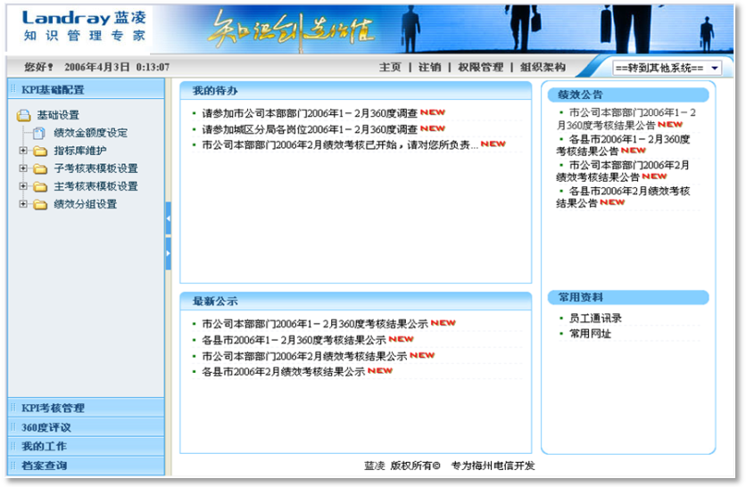
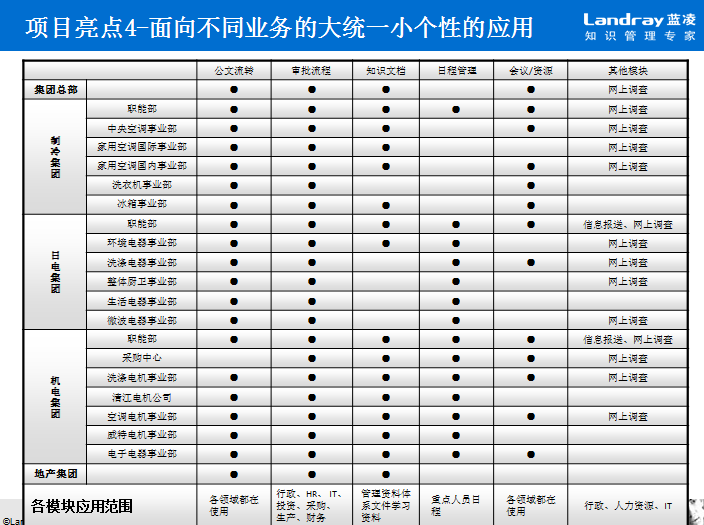

件文件－方案卷
目 录
TOC \o "1-3" \h \z \u 第一章 项目综述 5
第1章 项目综述
1.1 项目背景
中国燃气控股有限公司是一家在香港联交所上市的天然气运营服务商，主要于中国大陆从事投资、经营、管理城市燃气管道基础设施，向居民和工业用户输送天然气，建设及经营加油站和加气站，开发与应用石油、天然气相关技术。总部设在深圳，下属各六十多个项目公司遍布全国各地。
经国家商务部批准，国家同意中国燃气投资有限公司拥有天然气、液化天然气、液化石油气、甲醇、二甲醚等燃气物资的进出口及国内批发、零售业务权。中燃由此成为国内第五家获得天然气进出口权的能源企业。
中燃集团随着公司业务日渐增多和企业文化的逐步成熟，与许多步入成熟期的企业一样，集团一方面内部对于加快办公运作效率与实现信息资源共享的要求日益强烈；另一方面对外界强大竞争压力也越发产生危机感，迫切要求通过一种工具来改善、优化企业管理，修炼企业内功以保持竞争优势。通过应用计算机网络化管理和整合企业运作流程，实现企业级的知识积累、共享及管理平台，实现项目管理等业务管控，整合企业现有的IT系统并统一展现，因此应对业务快速变化是中燃集团的普遍需求，急需一能够支持业务发展的系统平台。
1.2 信息化现状分析
中燃集团总部经过多年的信息化建设，已经成功实施六大应用系统，分别是OA（办公自动化）、采购网、工程管理系统、企业经营数据报表系统、金蝶EAS系统、客服收费系统，已初步实现了公司业务信息化管理，较好地支撑了公司业务发展。
但是，现有业务系统也反映出了一些问题，OA系统、采购网、企业经营数据报表系统、工程管理系统、金蝶EAS系统都有独立的工作流程引擎，业务数据被分割到各系统中，没有很好的整合，业务人员需要到各个系统中进行查询操作等。集团急需要将集成统一待办的业务系统主动或者被动向统一待办平台发送待办信息，实现待办事项的统一管理，这样能够对待办请求集中处理，用户根据具体的业务逻辑，通过单点登录进入业务系统，然后进行处理和操作相关业务。
目前集团运营系统有OA系统、金蝶EAS、工程系统、采购网、邮件系统、客服收费系统，其中金蝶EAS系统和客户服务收费系统为C/S结构，其他系统均为B/S结构， EAS系统采用的AIX服务器操作平台，其他系统都是Windows平台。除OA系统外，各个系统的认证方式都是通过验证用户名和密码，发送请求到数据库进行检索和核对用户来进行身份认证。OA系统是基于Domino Ladp目录服务进行用户身份认证, 部分用户采用动态密码卡进行身份验证。
随着中国燃气的规模及业务的持续发展，信息系统也不断扩展，但各个信息系统都是为解决特定问题而单独实施的，因此大部分应用相互孤立，单独管理，而且无法共享信息。SSO是为了解决将各个孤立的信息系统整合起来，通过一个账号能够进入多个应用系统，避免用户需要多次输入用户名和密码来进行系统间的切换。它的功能包含用户注册、登录、注销、密码修改、密码找回、成员间系统跳转等。
各业务部门日益增长的流程业务需求，信息部门需找到一个更好的满足业务发展的新模式。为加快和标准化今后的应用建设和集成，项目中将建立一个应用和流程整合平台：以BPM流程管理和ESB服务总线、Web应用服务等平台中间件为核心，提供应用系统建设所需的技术支撑、通用组件或构件服务，提供应用整合所需的技术支持保障，保证应用系统的开发速度和扩展性。
1.3 项目成功实施保障
总结蓝凌实施的企业应用平台项目，我们将企业系统平台系统实施成功的关键因素归纳如下，同时我们也将以下列设计思想和原则来规划中燃集团系统平台：
我们最先强调的就是要有一套创新的管理思想来制导整个项目的策划、系统规划、技术实施和持续推进。蓝凌作为全国首家知识管理专业服务商，我们一直致力于将先进的管理思想、方法和工具引入国内企业，为客户提供全程的系统平台规划和实施服务。在我们的研究开发体系中，系统平台系统是我们最重要的专业方向，我们将为中燃集团系统平台提供专业的SOA规划、业务流程梳理、开发应用培训、咨询顾问和实施推进辅导等服务。
企业系统平台系统中我们主要解决的问题是系统如何对中燃集团产生效益？
对于中燃集团系统平台的具体情况，需要我们根据其系统平台每个业务岗位的特殊性去寻找和规划支持岗位工作的知识内容和管理方式。再从事务类型来看，系统平台也有其特点，如人力资源，它所针对的员工、员工分布特点、员工素质特点及管理都有别于其它类型的企业。所以，我们对中燃集团系统平台，更是要从其特点出发，通过调查分析得到其特别的系统平台内容和方式，才有把握找到中燃集团系统平台开展系统平台管理的成功途径。
企业级或某业务领域的流程作体系化进行梳理规划，帮助企业进行流程管控体系的建设，根据业务优化要求识别核心业务流程并进行分析优化，进行流程运营知识化状况分析优化，规划与设计流程管理E 化平台。根据中燃信息化实际和业务需求，需要建立什么样的服务地图，有哪些服务，服务颗粒度有多大，如何保障服务能够长期有效等。
解决这些问题就需要咨询顾问的服务。蓝凌在国内率先实现了IT软件供应与管理顾问咨询的完美结合，有效的构建了技术、管理、应用的价值链和增值工程，优化和整合了资源，为客户创造了最大价值和利益。
就象企业发展需要一套规章制度保证它的正常运作一样，企业系统平台系统也需要从制度上保证，以便使企业系统平台系统带来的管理和办公模式的转变成为一种最佳模式。蓝凌公司咨询团队会针对中燃集团的具体情况，协助中燃集团制订针对企业系统平台系统在中燃集团顺利推进和成功应用的保障体系，通过建立完善的制度体系来引导和约束员工的行为。
在企业系统平台系统的推动中，协助用户建立公司的信息体系架构，通过工具平台、组织和制度逐步使中燃集团企业信息门户系统的使用走向正规化。
企业用户掌握计算机技术的水平有高有低，这就要求在推广应用时，要制定较科学的培训、应用工作计划，不能急于求成，也不可放任不管。要将有效的管理寓于优质的服务之中，使各级领导及业务人员确实感觉到门户系统能给自己的工作带来很大的便利，能从中享受到优质的服务，将门户系统的使用变成其自觉的、从内心身处愿意的、没有任何抵触情绪的行为，只有这样，一个统一的门户系统才能顺利地投入使用。
我们一直认为企业系统平台项目不是一撮而就的，它伴随着管理思想的进步和技术的发展在不断演进，它是循序渐进的阶梯式的发展。因此我们在整个项目规划设计时，必须“整体规划、逐步推进”的策略。同时，作为系统服务商，我们蓝凌也将提供持续的本地化服务和支持，来确保中燃集团企业系统平台系统能够持续优化及推广。
平台的选择关系到系统的长远发展和系统特性的基础，因此选择合理的软件平台是一个非常重要的抉择。
系统平台平台作为中燃集团比较关键的IT平台，在日常管理工作中的地位非常重要，其功能发展越来越丰富，与其它业务系统的关系也越来越紧密。因此我们建议中燃集团平台系统的建设中，选择适合公司业务发展的中间件平台和数据库，当然，在选择的同时也需要考虑原有的企业投资。
充分为用户考虑的实际需求，使功能模块能真正被用户所接受。加强软件的模块复用性，提高软件的柔性构造功能，当用户的需求发生改变时，可通过一定的设置调整来满足业务变化的需求，从而提高用户的使用效率。避免用户哪怕仅仅是轻微的改变，都需要开发商通过定制来解决，从而有效的保护客户的投资。
第2章 系统架构设计
2.1 架构方法
从业务和竞争力角度，我们可以用一个词来概括其要求：速度。您的业务需要迅速响应市场机会，并第一个推向市场。同时，业务需要可缩放、可靠和安全的生产性应用程序。单独依靠旧的或新的技术不可能获得成本有效、完整或足够灵活的解决方案，也就无法向客户交付所需的服务质量。在新旧技术之间需要有一座桥梁，它可以不断扩展现有资产，同时还能提供像Web服务这样的新技术。幸运的是，现在已经有了这样的桥梁，它称为“面向服务体系结构”(Service Oriented Architecture -- SOA)。
在SOA世界里，完成业务任务的方式是执行一系列“服务”以及具有良好定义的与服务的交谈方式的作业，还有良好定义的交谈取消方式。只要服务按期望的方式做出响应，并提供了他或她所需要的服务质量，那么，对用户来说，服务是如何实现的并不重要。这意味着，服务必须足够安全、可靠和快速。这样，在企业部署了多个厂商的软件和硬件的IT环境中，或者说在一个现有资产与新的应用程序、集成技术或数据源混合在一起的企业中，SOA成为近乎理想的方式。
有很多企业的IT得益于使用SOA实现的旧资产激活。在业务方面第一位的需要是从现有资产和系统创造新的价值，通常这需要利用新的业务过程和复合的应用程序（例如，门户应用程序）来实现。SOA可以帮助客户实时地访问先前的批处理事务，由此提高做出业务决定的速度和准确性。通过SOA来重复使用关键业务数据和应用程序有助于提供更好的客户服务，从而提高这些客户保持率。
另一方面，SOA允许在重新确定关键过程和数据的方向时利用优异的服务质量。此外，SOA可以帮助您扩展并保护现有的旧资产投资和开发人员技能，同时帮助您与您的企业以及客户、伙伴和提供商所使用的其他系统建立更好的互操作性。
您可以更好地利用旧的和新的世界，以便在继续利用现有资产的同时利用新的技术进步。当您开始这样做时，您将逐步使您的企业更灵活、能够更好响应机会，更好地服务于您的客户，并改进您的操作。这就是我们称为按需生产型企业的内涵，并且SOA可以使您的旧资产基础结构以新的和更好的方式，继续为您工作。
总之，面向服务的体系结构能够实现企业应用或资源之间的灵活连接，因为它把每一项应用或资源表达为具有标准接口的服务，能够让应用或服务交换结构化的信息（消息、文档、“业务对象”），并通过企业服务总线调节消息交换。
SOA 通过清晰的定义和松散的耦合提高了灵活性。在SOA的技术中，所谓的服务是一种“自包含”(self-contained) 的实体，它能够完成独特的业务功能。服务根据 SOA 原则利用现有的中间件实现交互。其充分利用新的开放标准以及 XML 数据定义（Web Services――Web 服务），把两者结合到快速进入市场的解决方案中。
因此，SOA的体系架构应该具有如下特征：
基于开放标准的模块化的产品和组件
提供丰富的功能
易于开发、部署和管理
整合基于角色的开发和管理工具
2.2 系统架构
基于对本项目背景、建设目标和业务需求的理解，结合蓝凌多年来项目实施的经验，建议采用面向服务的IT架构，包括了涉足中燃集团IT发展和规划的各个层面：各异构系统通过企业服务总线，通过发布服务、消费服务，建立基于SOA的IT体系架构。
中燃集团系统平台项目整体构架思路：ESB作为SOA架构重要组件，为SOA提供与企业需求保持一致的基础架构，从而提供合适的服务级别和可用管理的、异构环境中的操作；每个服务通产之间是相互独立的，而业务是由一些服务的组合构成，组合的粘合剂就是流程，因此可采用BPM来应对快速变化的业务需求。Portal是基于WEB的应用，可将不同资源进行整合并呈现给用户。
中燃集团系统平台系统整体构架：分为企业应用、企业服务总线、通用服务、通用组件以及数据层。
首先，基于门户Portal和访问控制管理平台技术构建企业信息门户系统，提供核心门户服务（比如用户身份与授权管理、个性化展现、内容编辑与发布管理、Web搜索等），实现统一认证与授权、单点登录与访问控制，实现对各个Web应用（OA/邮件系统、收费系统、采购、项目等业务系统）聚合展现给用户，可根据中燃实际建立不同的水平门户和垂直门户。
其次，为实现应用系统之间的信息交换与共享集成需求，ESB服务总线提供基于标准的可靠消息传送、消息转换与路由转发，以及面向服务架构（SOA）的Web Services服务封装、服务组合/编排、服务注册与安全管理等功能。基于BPMS平台可以快速定制开发各种人员交互工作流（如合同审批、工单流转等业务），可在流程环节中调用ESB上所注册的Web Services服务，从而快速生成新的复合应用，并以标准的方式展现到门户系统中。
中燃系统平台还包括了大量的通用组件和服务，通用服务包括：消息服务、OMS、知识管理服务、系统安全服务、搜索服务、报表服务、统一认证等服务；通用组件包括了流程引擎、消息队列、元数据管理、UIM等等。
第3章 系统平台解决方案
3.1 工作流平台方案
蓝凌EKP-kWF工作流平台融合了国际先进的业务流程管理框架和知识管理思想，结合了蓝凌十年间五百多家国内优秀企业的实际业务需求研发而成，是先进管理思想与IT技术、企业实践三者结合的成果。
3.1.1 设计理念
蓝凌EKP-kWF以支撑企业业务流程规范化、敏捷化、智慧化为出发点，强调易用性、专业性、开放性并重原则，并遵循WFMC、BPMN等国际开放流程标准，结合蓝凌多年来在国内实施流程优化、协同管理、知识管理项目的实际需求进行设计，其基于蓝凌核心EKP技术平台，强调面向流程管理者、流程使用者、技术开发者的全方位用户支撑。
3.1.2 业务价值设计
蓝凌EKP-kWF的设计目的，从业务价值角度，包括了：
固化业务流程，提升流程规范性
E化的流程管理系统提供了一种“刚性”的管理工具，通过在流程中约定各个协作环节的流转顺序，处理方式，办理时间、工作权限、职权范围等，规范业务办理过程，提高组织管理的规范化程度。
循环改善，优化业务流程
通过流程效率分析工具，kWF帮助流程管理者寻找流程优化点，并通过流程建模工具进行流程优化修改，形成流程自我改善和优化循环。
沉淀流程知识，提高协作力
通过流程模板、表单模板的建模、存储和版本功能，kWF可帮助流程管理者对流程进行循环反复的优化完善，记录每个流程模板版本的演变，帮助管理者沉淀流程知识；
运转于kWF平台上的流程，通过在线协作，将传统的依靠人力驱动工作的模式，转变为系统驱动工作的模式，大大降低业务过程的处理时间，进而提高工作效率。
3.1.3 技术价值设计
蓝凌EKP-kWF的设计目的，从技术价值角度，包括了：
强调易用性，提高维护效率
考虑中国企业特色，kWF提供了领先业界基于分级管理的流程模板和表单模板建模功能，流程维护者可直接在IE上进行拖拽式，所见即所得式操作，无编程，纯配置方式，基本普通业务人员也可进行模板创建和修改操作，极大降低了流程的建模难度，从而提升流程维护效率。
强大的底层API，提高二次开发效率
针对复杂流程，kWF提供了大量流程扩展接口，基于蓝凌EKP产品的插件工厂模型，流程开发人员可自行制作插件，并进行全系统范围内的复用；开发人员还可通过调用流程引擎API实现流程开发，大幅提高流程开发效率，帮助企业快速建立全面流程e化平台。
稳健可靠的运行引擎，保障高性能
kWF作为企业内统一的流程引擎，需要考虑由此带来的巨大的用户和数据负载量。kWF在长期为我们的大型企业客户服务过程中，经历了每日百万流程示例，千万级表单数据量、十万级用户参与量等考验。
3.1.4 体系架构
蓝凌kWF系统基于标准J2EE架构，借鉴了业界最成熟的SSH开源框架，包含开发工具、运行平台、接口服务、监控管理工具四个重要的组成部分，结合蓝凌EKP产品服务包，能发挥更加强大的作用。整个系统基于SOA的架构思想，具有稳定、高效、安全、高可扩展性等特点。整体架构图如下：
3.1.5 开发工具
开发工具是开发人员进行流程表单开发的有力工具，通过开发工具，开发人员可以将测试环境的流程/表单导入到正式环境，也可以对流程/表单的功能进行调用和二次开发。
流程建模工具：通过可视化的界面，对流程进行建模。也可以将已经定义好的流程进行导入、导出，减少流程的配置工作量。
流程插件开发工具：以插件的模式，对流程引擎的功能进行扩展，从而满足更加复杂业务的需求。
流程发布工具：将已经定义好的流程模板，发布到运行平台中。
表单建模工具：通过所见即所得的界面，对表单进行描绘。也可以对已经定义好的表单模板进行导入、导出，减少表单配置工作量。
表单插件工具：以插件的模式，对表单引擎的功能进行扩展，从而满足更加复杂的业务需求。
表单发布工具：将已经定义好的表单，发布到运行平台中。
3.1.6 运行平台
运行平台是一个部署于客户生产环境基础平台，是EKP流程表单引擎用以依赖的运行时环境。
在开发工具定义好流程模板、表单模板、流程插件、表单插件，发布到运行平台后，流程模板交给流程解释引擎进行解释，表单模板交由表单解释引擎进行解释，流程插件交由流程插件管理器进行加载，表单插件交由表单插件管理器进行加载，最终由流程引擎运行服务执行。
流程引擎运行服务，是整个运行平台的核心，负责整个流程引擎的调度、执行等任务。流程引擎运行服务依赖于组织架构服务、日历服务、异常服务、消息服务、规则服务等外部服务，这些服务默认采用了EKP产品相关的服务包的实现，也可以通过根据客户现有系统的实际情况进行开发实现。比如规则服务可以采用EKP产品服务包的内容，也可以使用IBM的规则引擎（ILog）。
3.1.7 管理监控工具
管理监控工具是用于保障流程表单能正常健康运行的工具，一般独立与运行平台部署。
管理监控工具将收集来自运行环境的日志数据，并对这些数据进行统计分析，发现运行环境的中效率低下的代码，根据预定的阀值给出预警。
对于无法继续运行的流程，可以在管理监控平台中及时发现，并修正运行过程中的数据，保障流程能正常运行。
管理监控工具还提供流程效率统计分析的功能，从流程和人的维度，对系统执行的工时、周期等进行统计分析，让管理者可以方便的了解到系统中各个流程的运行效率，从而为优化流程、提升流程处理效率提供了数据的支持。
3.1.8 产品组件介绍
蓝凌流程管理系统提供以下四个方面的功能组件：
流程建模功能：对企业业务流程及组成这些业务流程的活动进行定义和建模。
运行控制功能：在一定的运行环境下，负责创建、执行和控制流程实例，激活相应的资源和应用，并完成过程中从一个活动到另一个活动的控制转移。它是整个业务流程管理系统的核心部分。
运行交互功能：在流程实例的运行中，业务流程管理系统与流程参与者及外部应用程序进行交互的功能。
管控分析功能：分析流程效率，人员负荷等关键要素，帮助优化流程和管理考核。
具体来说，kWF主要由以下几个核心产品组成：核心流程引擎、流程建模平台、表单建模平台、接口服务框架、流程运行平台和流程分析平台。
3.1.9 核心流程引擎
蓝凌流程管理系统遵循国际工作流管理联盟制定的规范，符合其参考模型，实现了其五类接口，同时根据行业应用特点做了一系列的功能扩展，以更加适应行业应用。
蓝凌流程管理引擎关键特性：
基于WfMC和BPMN参考模型设计，并做了大量适合国内企业的扩展。
强大的流程调度模型，提供基于事件的流程调度模型，产品支持顺序、分支、并发、循环、嵌套、多路选择与归并等各种基本流程模式，还支持自由流、回退等多种特殊流程模式。
强大的任务处理机制，提供完善的任务处理策略，支持通过、回收、驳回、转办、会签、授权、沟通等各种任务处理模式。
符合J2EE标准，支持Tomcat、Weblogic、JBoss、WebSphere等应用服务器。
支持多数据库，支持Oracle、DB2、MySQL、SQL SERVER、DM等数据库。
基于SOA架构理念设计。
完整的日志记录框架，记录操作日志和流程流转历史。
完善的异常管理机制，方便管理员快速定位异常。
高效的数据处理能力，支持高并发量，支持集群部署。
可靠的高安全性，严密的权限控制机制。
丰富的编程接口，供用户二次开发使用。
多种接口访问方式，提供本地、EJB、WEB SERVICE等访问方式。
3.1.10 流程建模平台
易用性是kWF的主要设计原则之一，将许多传统只能由企业IT部门完成的工作，直接提升为普通业务人员也能操作。由业务部门直接在运行平台上通过图形化操作界面，让业务人员用最少的时间设计或修改企业业务流程，具有直观、方便、快捷的特点。

(担保审核流程)
流程建模平台关键特性：
无需复杂的程序开发即可使用流程
提供丰富的流程图像元素
流程元素拷贝、粘贴、删除等操作
支持审批、签字、抄送、机器人、条件分支等节点
可实现串行、并行、循环等各种复杂的流程逻辑关系
支持子流程设计
支持动态设置活动参与者
可设定流程操作时限
支持工作流程的权限管理
支持流程审批意见的权限管理
可设定任务到达参与者的多种通知方式
可设定任务的多种分配方式与分配策略
提供机器人节点，能方便与异构系统进行有效的信息和数据交互
3.1.11 表单建模平台
kWF提供了强大的的表单设计工具，是一种可视化web化的新一代表单设计器。用户可以使用图形化设计方法，通过拖放连结(drag-drop linking)操作轻易地将表单字段与流程电子表单链接，其结果可保存为html或jsp文件。
（帐号申请单）
智能表单工具关键特性：
可视化设计界面，简单易用；
与流程设计器紧密结合，方便表单数据的配置；
提供权限控制区段，支持表单局部区域的权限细化控制；
提供灵活的有效性验证功能；
支持自定义控件，方便系统扩展；
提供十多种标准Form控件；
所见即所得的用户界面设计；
可视化界面与JSP源代码界面同步显示；
多种类型的功能组件，如复选框，单行文本框，多行文本框，下拉列表，列表，相关数据显示，表格，明细表，权限区段等；
支持与流程节点绑定的权限配置，以及无流程环境下的权限配置；
文件上下载、数据源配置；
数据映射配置；
JSP程序生成；
3.1.12 接口服务平台
kWF的接口服务框架封装了核心引擎接口，并为项目中工作流的二次开发提供一个框架基础，为其中可变的部分提供了配置的方式，使二次开发变得简单快捷。工作流服务框架由js、标签、接口封装等组成，可以方便地集成到业务系统的WEB应用中，具备WEB框架无关性的特点，它封装的工作流服务即支持业务系统在WEB端直接调用，又支持在核心端调用。
接口服务框架
工作流服务框架把业务系统和核心引擎有机的结合起来，其主要功能如下：
信息交互
工作流服务框架接收客户端的流转请求，分别调用业务系统、核心引擎的流转操作，接收业务系统、核心引擎的返回值，响应客户端的流转请求，实现业务系统、核心引擎的信息交互，完成业务流转。
封装业务流转组件
该服务框架把下列流转操作封装为统一的对外服务组件。
实现免开发
免开发是指开发业务环节的增、删、改、查操作时，不用关注业务流转操作，即不用在业务增、删、改、查代码中嵌入控制业务流转的代码；只通过流程定义和业务页面的配置就能把各个业务环节连接起来，从而实现业务的流转。
（流程接口服务框架）
3.1.13 流程运行平台
流程运行平台主要提供给业务部门使用，客户可以随时跟踪业务流转过程，处理需审批的流程实例，并且可以在业务流转过程中拥有权限的范围内自由干预流程。
流程运行平台关键特性：
支持审批、签字、通过、驳回、回收、转办、沟通等任务操作
支持运行时设置活动参与者
支持运行时业务流转的修改和调整
提供多种通知方式
提供督促、特权干预等操作
提供流程流转轨迹动画，流程实例的流转轨迹动画播放
3.1.14 流程分析平台
流程效率分析平台主要是实现对流程实例的效率分析和预警功能，客户可以随时查看业务流转情况，并可以分析流程实例的实际运作效率。
（流程分析）
流程效率分析平台具备关键特性：
统计分析。提供任务统计分析和流程统计分析，以二维表和图形化的方式更加直观的展示数据，可在多种图形间进行转换，并可将数据导出为txt/xls/pdf/xml。
流程预警。提供流程运转过程中的预警功能，以报表的形成呈现，以方便客户随时跟踪和监控关键性的流程。
效率分析。提供任务效率分析和流程效率分析，以二维图表等方式展示数据，同时也支持导出功能。
流程实例管理。提供流程实例查询，待办、在办、已办任务查询，任务的综合查询。
配置管理。方便配置流程管理各个配置项，如数据库配置、日志级别、WEB SERVICE等配置。
假日管理。灵活定义节假日规则，并提供流程和系统级别的节假日管理。
日志管理。提供日志查询和查看明细等功能。
3.1.15 组织架构平台
在组织架构平台配置和维护单位群组、岗位群组和个人信息的操作，并且可以定义常用群组。配置完成后，系统将分单位群组、岗位群组和个人信息进行展示。组织架构的配置将涉及各个模块中的地址本单位、岗位和人员的应用。
组织架构的设置方式有三种，可根据需要选择设置。
从其它系统同步导入组织架构（支持LDAP）
以数据导入方式创建组织架构
直接在系统中创建组织架构
如果启用LDAP配置，组织架构的单位群组、岗位群组和个人信息在LDAP中配置，通过手动同步或自动同步方式在配置库中维护。
当系统中的群组或者用户名发生变化时，在系统配置库中激活队列处理中文档，将对相关的数据库进行数据迁移。
3.1.16 通用岗位和角色线
当我们碰到一些需要查找某个人领导的时候，我们可以通过配置组织架构和通用岗位来获取。当我们碰到一些需要查找某些特别关系（如财务线），而通过配置组织架构和通用岗位都无法满足的时候，我们可以通过角色线配置出另外的一些组织架构关系来获取，从而达到不修改程序也能满足客户需求的目的，使系统的灵活性得到进一步提升。
角色线主要是为流程提供处理人而开发设计，我们通过它可以灵活，快速的定义各种上下级关系。并且还可以进行一个跨部门的处理，它对系统的本身的组织架构没有任何依赖关系，具有很好的扩展性。
角色线系统用于规划整个集团的组织架构，并定义其查找方式，查取在整个组织架构的层级中所需的人员、部门、岗位和机构，它与流程相结合可以更灵活配置流程处理人，并查找相应的人员和组织架构信息，解决流程处理人的领导限制和层级问题。
流程审批节点处理人设置时，本系统提供一些常用的通用岗位[如直线领导、提交人的直线领导、1（2、3…）级直线领导、1（2、3…）级领导]，当通用岗位不能满足流程配置要求时，请使用角色线配置流程提交人和流程处理人的关系以提供流程使用。
【角色线简单使用举例】
举例说明角色线的使用过程。假定我们创建了一个公司的组织架构如下图所示。
（图：角色线组织架构）
我们要设置一个简单的请假流程审批关系如下：
提交人（所在部门：景德镇办公室科室A/B，景德镇办公室）——>景德镇办公室（人事管理员审批）——>景德镇办公室（室长审批）
提交人（所在部门：景德镇财务部科室A/B，景德镇财务部）——>景德镇财务部（人事管理员审批）——>景德镇财务部（部长审批）
那么我们可以创建一个请假审批流程的角色关系如下图所示。
（图：角色线配置关系）
在办公室室长（或财务部部长）和两部门的人事管理员节点增加相应的审批人，配置相应角色关系在流程中应用即可。
流程中应用角色线如下图：
3.1.17 公式定义器
当我们碰到一些无法预估的业务计算逻辑或该计算逻辑可能会经常发生改变的时候，我们可以通过公式定义器，让用户直接在配置中定义实际的业务计算逻辑，从而达到不修改程序也满足客户需求的目的，使系统的灵活性得到进一步提升。
流程中使用公式定义器：
流程定义中的条件分支，可以通过公式计算返回的结果决定流程的流向。
流程定义中，某个审批节点的审批人，可以通过公式计算节点处理人。
表单自定义中的字段初始值。
3.1.18 Web服务管理
Web Service是一个开放的标准，适用于处理异构系统之间的通信和数据交换。本服务对系统中的Web Service进行统一管理，可以在各种平台下对服务提供统一的安全、审计、日志管理。简化了服务提供和服务管理过程，提高服务的安全性，非常方便第三方进行应用层的二次开发。
主要功能：
服务注册：提供对系统中Web Service的集中管理。注册信息定义了服务的运行及管理参数。
服务的基本信息包括服务名称、服务标识、服务接口和访问路径等。系统启动时会查找所有定义在系统扩展中的Web服务信息；
匿名访问：默认情况下，客户端需要提供用户口令等认证信息才能访问服务，如果允许匿名访问，则服务端关闭验证，客户端访问服务无需提供用户口令；
启动类型：分为自动、手动、禁用三种类型。默认情况下，系统启动时会加载自动类型的服务；
用户设置：设置可以访问此服务的WebService用户。默认情况下，服务端会验证客户端的身份信息，包括用户口令、IP地址等；
最大连接数：可以限制客户端连续访问服务的次数，防止恶意连接；
最大运行时长：设置服务的运行时间限制，超时的服务会在超时预警模块中显示。
服务管理：包括启动、停止服务和生成客户端代码等功能。
启动服务：启动选定的WebService，支持批量操作；
停止服务：停止选定的WebService，支持批量操作；
生成客户端代码：自动生成选定服务的客户端JAVA代码，并提供打包下载。
运行记录：记录WebService的执行情况，为审计服务提供依据。记录的信息包括服务的名称、标识、访问用户、客户端IP地址、服务启动时间、服务结束时间，执行结果和错误信息等。
基础设置：设置备份运行记录的间隔天数和备份保留的天数等；
服务异常处理：记录非法用户和非法IP地址的访问，返回错误提示信息给客户端；记录WebService运行时产生的完整异常信息，并返回给客户端；
搜索：可以通过服务名称、服务启动和结束时间、执行结果等搜索运行记录。
超时预警：显示所有运行时间超过最大运行时长设定的服务。
帐号设置：设置WebService用户帐号信息。包括登录名和登录密码，限定可以使用此帐号的客户端IP地址，限定此帐号可以访问的WebService等。
【与第三方系统集成举例】
EKP-kWF 9.1版本审批流程中提供了“启动审批流程WebService”的功能，可以由第三方系统发起审批流程；
通过、驳回、沟通、转办等没有提供操作的webservice，可以通过数据同步的方式，由第三方系统提供webservice，审批结束后EKP-kWF平台调用接口写入第三方系统中。
3.1.19 LDAP集成组件
目录服务伴随着网络的"成长"而"成长"起来。越是规模大，网络资源丰富，应用软件林立的系统，越能显示目录服务"管理"的威力。
在目录服务方面，蓝凌EKP系统支持标准的轻量级目录访问协议(LDAP，Lightweight Directory Access Protocol)，利用LDAP目录工具，实现EKP-J平台集成第三方LDAP（AD、IDS等），并提供从LDAP服务器导入组织架构信息，通过LDAP进行用户登录验证的功能。
3.1.20 产品特点
蓝凌EKP-kWF更关注如何让普通业务人员能参与BPM的所有环节，而不是必须要企业的IT部门参与，并且支持中国国情的任意流，即易用性非常强，更适合中国国情的企业管理。
产品完全遵循JavaEE标准，参考WFMC和BPMN规范实现，并在此基础上有一定的扩展；
支持业界主流的操作系统（Windows，Linux等），主流的中间件（Tomcat，Websphere等）和主流的数据库（Oracle，Sqlserver等）；
支持企业级应用系统第三方轻量目录存储协议LDAP。
支持与Microsoft Active Directory 和LDAP Sever集成；
支持与邮件系统、RTX即时通讯、短信系统等的集成；
异构系统可通过WebService接口和工作流引擎进行交互；
对JAVA系统直接提供高效的原生JavaAPI接口，方便快捷；
工作流产品可以和用户系统分开独立部署，也可以部署在同一服务器上。
产品提供专业的表单设计工具和流程建模工具，通过可视化的操作，简单的拖拽即可完成流程的定义和表单定义；
提供自定义的公式编辑器，满足各种计算需要；
提供完善的开发文档和Demo；
提供流程附加选项、监听流程事件、机器人节点等多种方式扩展流程引擎。
支持数据库或LDAP等多种身份认证方式；
支持细化的表单局部区域、字段级的权限控制；
所有流程操作都有详细的业务操作日志；
从流程的定义到发布以及流转的各个环节都有严格的权限校验；
系统支持在不同的流转环节设定不同的表单权限；
图形化界面展现和操作，完全Web界面，无需任何控件支持；
支持人工节点和机器节点，人工节点可以进行通过、驳回、废弃、转办、沟通等常用操作；
机器节点可作为分支、邮件发送、数据读写、创建子流程等操作，甚至可以通过编码扩展；
支持自由流转，可以在流程过程中修改节点处理人、自由跳转、增删节点；
特权人可以对流程进行特权干预；
与表单自定义、公式定义器、角色线、消息引擎等完美整合；
提供邮件，短信，rtx消息，kk消息等多种任务通知方式；
即使是完全不懂技术的使用者，也可以通过配置实现大部分功能；针对了解一些技术的使用者，可以通过简单脚本或SQL语句方式进行配置，实现系统原本没有的功能；针对编程人员，可以通过后台代码的扩展方式，实现复杂的业务逻辑。
支持10万以上级别的注册用户数、数千级别的并发用户使用，千万级别的数据量。并且系统支持通过简单的增加集群节点数目的方式来线性的增加系统的处理能力，能有效的保证系统在流畅的环境下运行。
系统支持集群cluster部署，在一个节点出现故障时，剩余的节点依旧能提供完整的流程服务，确保系统7*24小时运行。
产品提供了完善的监控分析功能，能有效、直观的跟踪系统中流程的实时运行情况。系统的流程预警功能根据设定主动提醒相关人员进行任务处理。流程效率统计能分析流程流转各环节的执行效率，可供管理人员进行流程优化，提高流程流转效率。
工作流产品可以和蓝凌EKP的其它产品完美集成，包括蓝凌EIS，蓝凌OA，蓝凌KMS（知识管理系统），蓝凌KK（个人知识管理软件）等。
3.2 企业服务总线方案
为了实现SOA，应用程序和基础架构都必须符合SOA的设计原则。企业服务总线（ESB）支持这些服务交互功能，并提供集成通信、消息传递以及事件基础架构来支持这些功能，为SOA提供和企业需求保持一致的某些架构，从而提供合适的服务级别和可管理的、异构环境中的操作。
EKP-ESB依据业界主流的规范以及标准构建，使得不同系统中提供的各种服务均能很方便的接入到服务总线中。EKP-ESB内置大量消息通道，可以与多种技术架构以及协议下的系统进行无缝连接。EKP-ESB内置了强大的数据服务功能，支持消息在不同系统之间的无缝传递，以及不同语义、格式的数据之间的相互转化。提供基于标准接口的常用系统集成适配器，减少程序员编码工作量，能够快速集成应用。
EKP-ESB提供了用户友好的服务治理功能，用户可以通过简单明了的界面进行服务的注册、更新、查找等生命周期管理操作，便于企业进行服务治理。
EKP-ESB 还提供了强大的分析、统计、监控功能，可以对系统运行过程中的状态进行分析统计以及监控，可以即时的发现系统中的已有问题，并进行优化。
另外，EKP-ESB中内置了大量的基础服务，如日志管理，认证服务，数据持久化管理，策略管理，事务管理等内容，并支持蓝凌开发平台。
EKP-ESB提供了强大的扩展功能，可以方便快捷的与各大厂商提供的主流的BPM产品、消息中间件产品、数据服务产品结合，提供更强更稳定的功能。
EKP-ESB 按照松耦合方式设计原则，根据系统的不同功能，将其划分核心服务平台、服务治理平台和服务监控管理平台三大功能。其架构图如下：
3.2.1 消息总线
消息总线是一个极具扩展性的具有工业标准、安全、可靠的消息传输系统，它为开发企业级应用提供了一个“消息高速路”，很好地支持分布式系统的开发、集成和运行，为跨越不同操作系统和网络平台的分布式应用提供可靠、高效的消息发送和管理服务，同时提供了服务接口及适配器。
1. 传输协议
支持多种传输协议，如File，FTP，JMS，TCP/IP，HTTP，SOAP，SMTP/POP3/IMP等。
2. Web服务
对Web Services 的支持，是ESB应具备的基本能力。EKP-ESB Web Services 有如下应用场景：作为进程流中的一部分，调用一个后台的 Web Services；将后台的遗留系统，如服务、应用、数据库，整合到可被调用的Web Services中；作为后台Web Services的代理，提供路由、转换、业务规则等服务。
3. 适配器
适配器提供对已包装的应用，数据库，文件，消息服务器，和遗留系统的广泛的连接。一个设计良好的适配器提供了一个抽象层，把应用基础设施的其余部分与各种棘手问题隔离开来。适配器是面向 SOA 的EKP-ESB 为解决系统之间的连接而开发的可重用的、统一的接口，通过该接口每一个应用系统仅需要与业务整合平台相连，而不需要与每个与之交互的应用系统相连。EKP-ESB适配器提供服务适配器、数据库适配器和适配器开发工具，用该工具用户可以开发符合企业应用的适配器。
3.2.2 消息路由
消息路由器是EKP-ESB的基础组件，其主要用来在已经建立好的消息通道中传递消息。消息由路由器携带，在不同的系统间传递。通过使用路由器，可以使消息能够以多种方式（推、拉、异步）传递，同时配以安全、事务，可信可靠操作，提供对消息状态的监控，保证消息传递的可靠性，机密性以及完整性。
EKP-ESB在消息传输中，还提供了时序安排的功能。EKP-ESB将发送的消息保持在队列中，对未发送成功的消息，可以重试发送直至满足特定条件，生成发送状态消息，并将其路由到不同的终端，以便对消息状态进行监控。
3.2.3 数据服务
在企业应用整合的过程之中，涉及到大量的数据相关的操作，如大规模数据的传输，数据格式转换，数据语义转化，数据内容扩充，数据内容过滤等等。EKP-ESB内置了强大的数据服务功能，定义了符合业界标准的规范化数据模型，提供了用户界面友好的方式对企业应用整合中遇到的数据问题进行操作，如可以通过界面拖拉的方式实现数据转换规则的动态定义，通过拖拉的方式对数据内容进行扩充，合并以及过滤等等操作。
一般情况下，数据服务是一个项目中占用工作量很大的地方，EKP-ESB的数据服务对这些操作进行了封装，提供了解决方案。应用EKP-ESB，可以快速的进行有关于数据操作的开发，减少项目开发时间，降低项目开发成本。
1. 数据转换
在消息的源和目标格式不同时，其数据的类型或格式转换则是必须的。EKP-ESB使用定义好的映射文件，来完成消息在不同格式间的转换。消息间的映射可以是XML-XML，XML-其它，其它-XML，其它-其它的。EKP-ESB提供了映射编辑工具，用户可以在可视化界面上，通过拖拽的方式，新建消息映射。
2. 消息校验
对于输入或输出的XML、非XML消息，EKP-ESB都提供了校验的服务。对于XML消息，可以通过XML schema 进行校验。对于非XML消息，则可通过EKP-ESB格式编辑器创建的消息格式进行校验。
3.2.4 安全管理
EKP-ESB提供了一系列的对安全的支持，如加密解密，权限，优先级，认证管理等。EKP-ESB系统本身并不涉及服务消费者与服务提供者之间的权限问题。但是EKP-ESB提供了高度简捷的可扩展方案，能够迅速的与第三方产品进行集成。EKP-ESB提供了多种组织机构的展现方式，包括按照项目结构展现注册的资源、按照资源的类型等。EKP-ESB还可以迅速的与主流厂商（IBM、BEA、JBoss）的进行整合。
3.2.5 运行控制
业务系统接入到总线以后，需要能够对服务监控。如监控服务的状态，服务的访问量、被访问量，响应时间、内存占用率、CPU使用情况、是否出现异常情况等。EKP-ESB提供了图形化的用户界面对以上信息进行监控。主要功能是集中配置和管理ESB网络中及分布在整个网络上不同的服务器；监控ESB网络上各种事件，日志，以及各个服务器的性能，系统信息和已经部署的服务；对计算机设备运行活动的完全记录和描述；对日志数据进行采集、汇聚、存储、归档、分析和报警、监控、自动化的手段；监视系统状态、追踪系统问题；可以根据监控数据对服务进行调整，对硬件环境进行调整，对服务流程进行优化等等。
统计分析在运行控制中扮演了非常重要的角色。 统计分析工作主要是对系统运行过程中产生的一些数据进行统计，并以一定的方式展现给用户，供用户决策使用。使用EKP-ESB，用户可以手动配置要对哪些运行过程中产生的数据进行统计，并以图形化界面方式展示给用户。
3.2.6 服务管理
EKP-ESB 需要对集成的服务进行统一的管理。包括服务的注册，验证，调试，服务的部署以及存储，以实现外界对服务的访问调用。同时还对服务变更进行管理，以保证服务的持久化及有效性。
3.3 消息中间件方案
3.3.1 EKP-MQ消息中间件
EKP-MQ先进的队列、消息及路由等处理机制，使其能够为应用系统提供高效、灵活的同步和异步传输处理、存储转发、消息路由等技术支持，确保消息在任何情况下都能够安全、可靠的送达。通过使用EKP-MQ，应用系统完全不需要担心消息传递过程中可能遇到的各种障碍（机器故障、网络故障等）和异常。
EKP-MQ提供点对点、发布订阅、路由、集群等多种方式的消息传递模式，极大方便了企业应用的灵活构建，同时EKP-MQ通过对核心、进程管理、队列管理等各层面的优化和改进，能够更加充分地利用硬件和网络资源，极大地提高了传输效率，为各种不同应用模式、不同系统规模、不同消息传输量的系统提供了强有力的后台支撑。
EKP-MQ为系统的管理人员提供了丰富易用的管理工具，以满足不同的管理习惯和管理需求。通过管理工具，在系统运行过程中，可以对系统对象进行动态管理和控制，以达到对系统运行规模进行调控、节省系统资源、提高效率的目的。通过基于浏览器模式的可视化监控管理中心，用户可以在任何运行IE的远端对系统进行远程集中管理，包括系统的启动、停止、配置和监控，极大地方便了系统的维护和管理。
EKP-MQ全面支持JMS1.1规范标准，用户可借助于它进行标准化的应用开发，并能够轻松地与其他系统进行集成。EKP-MQ也可以和任何遵循JMS1.1规范的其他主流应用系统或中间件产品进行无缝集成。
EKP-MQ作为一个消息传递的可靠平台，应用系统可以借助于它轻松地交换和处理消息，而无需考虑消息传递的具体细节，能够大大降低开发难度，缩短开发周期，节约开发成本。
3.3.2 消息管理
1、消息定义
应用程序交由EKP-MQ传输的数据定义都称为消息，我们可以定义消息的内容并对消息进行广义的理解，比如：各种类型的数据文件，某个应用向其它应用发出的处理请求等都可以作为消息。
消息由消息描述和消息的内容组成。消息描述为消息长度等消息属性信息；消息内容为用户需要真正传输的数据信息，它的格式由该消息的提供者及接收者协商而定。
2、消息格式
EKP-MQ支持字符流和文件两种消息格式，用户可根据应用系统的需要选择任何一种方式。用户使用字符流消息格式时，需要将消息的内容、标识、长度等信息传递给EKP-MQ；用户使用文件消息时，则只需要将文件名（包含路径）告知EKP-MQ即可，EKP-MQ将根据用户提交的文件名对文件内容进行处理和传输，最终交付给用户指定的目的地。
3、消息生命周期管理
EKP-MQ提供消息生命周期控制功能，每条消息都赋予了生命周期这样一个属性，用来控制一个消息从放入队列开始，直到被消费所允许的最长时间，即消息在队列中的最长存活时间。一个消息超过生命周期还没有被传输完毕或被应用处理，将会被自动丢弃。
通过生命周期这一机制，可以有效地清除过期消息，释放占用的核心资源，保证整个系统的效率。消息的可靠传输是局限在生命周期内的。通过为消息设定生命周期的方法，解决消息传输中的堵塞问题，提高效率。
4、消息优先级
EKP-MQ提供消息优先级控制功能，根据消息的紧急程度，在发送前可以为其设置10个不同级别的优先级(0-9)。优先级越高，消息的发送速度也越快。10个优先级中有两种比较特殊的优先级，即独占优先级（9）和等待优先级（0），独占优先级为最高优先级，即只要有此优先级的消息，其他优先级的消息就没有机会发送；等待优先级为最低优先级，即只要有高优先级的消息，此优先级的消息就没有机会发送。
5、单消息和组消息
EKP-MQ系统中传输的消息，可以是一条单一的消息，也可以是一组消息。组消息由多个单消息组合而成，在处理时相当于一个消息。所有的子消息拥有相同的目的地、生命周期、持久性和优先级。如果一个子消息出现问题，核心会对所有的子消息采取相同的处理操作；系统恢复时，要么都恢复，要么都不恢复。使用此功能，可以保证一批消息能够同时被用户所获取和处理，满足系统对这一批消息之间关联处理的需求。
3.3.3 队列管理
队列是消息存储的地方，消息在收发过程中一直存储于队列中，持久的消息存放在磁盘等硬介质上，系统重启恢复时能够被恢复出来；非持久的消息存放在内存上，系统恢复时不能被恢复。
3.3.4 队列类型
EKP-MQ系统提供的队列基本类型为远程队列、发送队列和本地队列。其他类型的队列如事件队列、发布队列、订阅队列等，都为基本类型的功能延伸。
远程队列
为远端一个队列在本地的对应，它是一个逻辑的队列，并不占有磁盘内存空间，
发送队列
发送队列可以被理解为存储转发队列，发往远端目的地的消息都要经由发送队列发出，被发送到异地的消息分别被放到不同的发送队列中，以保证从本节点到不同目的地的消息传输不受干扰。在消息传递的过程中，如果发生网络故障，消息将被保存在发送队列中，等待故障排除之后，将继续发往目的地。
本地队列
本地队列是应用程序通过API对其进行读写操作的队列，EKP-MQ从网络上收到的消息，需要放入本地队列，才可以被应用所读取，应用可以直接放到本地队列中。
3.3.5 队列分组
EKP-MQ的一组队列由不同的队列控制单元负责管理，用户可以为不同业务定义不同的队列，并划分为不同的队列控制单元进行管理，不同的队列控制单元的队列消息有不同的核心进程负责处理，相互不会影响。
3.3.6 消息传输
EKP-MQ支持点对点、路由转发、发布/订阅三类消息传输方式：
1、点到点传输
点对点传输是指需要进行消息传输的两方直接建立传输通道，进行消息传输的方式。这是最常用的一种传输模式。
2、路由转发
EKP-MQ提供路由转发功能，即支持在不相邻的节点间进行消息的传递，消息从发送方传递到路由节点后，会根据配置信息将消息发送给相应的接收者。通过这种方式，可以实现消息在一个网络内的自由流动。
3、发布/订阅
EKP-MQ提供发布/订阅的功能，通过发布/订阅，为应用提供了一种透明的信息发布和信息消费的框架。消息的发布者只负责发布信息的收集，并通过一个公共“主题”来表示这个消息，消息的订阅者通过公共主题来订阅需要的消息，当有订阅“主题”的消息发布时，消息自动发送给订阅者。
订阅者跟发布者可以分布在一个节点上，也可以分别分布在不同的节点上，分布在不同节点上的发布者和订阅者通过PSBroker的树状网络。
通过发布订阅功能，可以实现消息的广播，当一个发布者发布某个主题信息时，EKP-MQ系统将会将此主题信息广播给所有订阅了此主题的订阅者。
3.3.7 压缩加密
EKP-MQ产品提供数据压缩可加密功能，产品本身带有一套数据压缩、加密算法，同时也为第三方的压缩和加密算法提供了接口，用户可以方便的将自己指定的压缩和加密算法嵌入EKP-MQ系统中。
3.3.8 断点续传
EKP-MQ提供断点续传功能，消息在传输过程中，不论是系统非正常关机或网络意外中断，消息都将仍保留在消息队列中，等待系统恢复后，消息将从传输失败点继续发送，而不是整个消息重新发送。断点续传机制可以有效减少高故障率网络上的冗余通讯量。在高故障网络上进行重传，会导致反复的失败重传，保证消息的可靠性。
3.3.9 流量控制
EKP-MQ提供流量控制功能，在传输的过程中，EKP-MQ可以根据设置将消息拆分为不同的小块，在网络上进行传输，传输到目的端后再重新组织为完整的消息。每个小块的大小可以根据网络带宽和网络质量的不同灵活设置，网络质量较高的系统，可以调大每个数据块的大小，以充分的利用网络带宽，网络质量较差的系统，可以相应调小每个数据块的大小，以减少对网络的压力。
3.3.10 集群功能
EKP-MQ支持队列级的集群功能。集群功能是指：EKP-MQ的若干节点可以组建为一个群组，对外提供消息接收和处理功能。当单个节点无法满足大负载的消息处理要求，可以使用集群功能将负载分配到多个节点上，提高系统的处理能力和可扩展性。集群内节点的数量可以根据需要动态调整。
EKP-MQ集群支持线路备份和负载均衡两类使用方式。
当一个节点想通过多条线路到达集群，即当一条线路出现故障时，可以通过备份线路到达集群，在发送节点需要配置多条集群线路。
当系统希望在多个节点或多个队列上分摊消息处理的压力时，可以选择负载均衡功能，消息发送到集群队列后，会根据系统设置的权重按照比例将消息分发到不同的队列中。
3.3.11 事件功能
EKP-MQ提供事件功能。事件指系统运行过程中发送的一些特定情况，用户可以根据实际需要可以通过配置参数文件定义或通过调用函数订阅需要记录的事件类型，当该类事件产生后，就以消息的方式记录进事件队列，用户通过专用的API可以读取这些事件，以便跟踪系统的运行情况。
通过事件功能，用户能够通过应用跟踪消息的传输情况，如消息是否已经传输完成等，同时当用户定义的事件发生时，系统能够将用户发送的消息进行保存，以保证消息不被丢失。其次，通过事件功能用户也能够及时了解系统中出现的各种故障，并及时进行排除和处理。
3.3.12 事务管理
EKP-MQ提供消息的事务管理，多个消息发送和接收可包含在一个事务里，EKP-MQ保证一个事务中的所有消息发送和消息接收的操作要么全部成功，要么全部失败。失败的消息接收操作会将消息回退到队列中，等待下次的处理。
3.3.13 应用管理
EKP-MQ提供对应用的灵活调度，可以在EKP-MQ启动后就将应用调度起来，也可以根据用户设定的规则，当队列中的消息积存到一定程度时，再通知应用去接收，以避免和减少在队列中没有消息时，应用进行消息获取的无效操作，保证应用及时准确的获得消息，提高应用处理的能力。
3.3.14 日志管理
EKP-MQ具有完整的日志功能，通过日志可以查看系统传输情况，并可以排除系统中出现错误信息。
EKP-MQ的日志记录级别及日志文件的大小都可以根据用户需求灵活配置，用户进行系统调试时，日志级别可以设置的较高，以详细记录系统传输的信息，当系统稳定运行后，日志级别可以相应调低，以减少日志记录对资源的占用。
3.3.15 管理工具
EKP-MQ提供系统管理工具，通过系统管理工具可以：
可以实现系统运行参数、动态修改运行对象配置参数、增加新的允许对象以对核心进行扩展、删除对象以减小核心；
可以监控各个运行对象的运行状况，包括系统对象的运行状态、数据通道的连通状态、队列中消息中的状况等；
可以监控系统的运行状态和浏览系统的运行日志；
可以启动和停止系统。
1、动态管理
EKP-MQ提供动态配置功能，用户可以使用管理工具对系统的配置参数进行动态调整，调整后的配置信息能够在运行系统中立即生效，而无需重新启动系统。
EKP-MQ也提供核心动态控制功能，用户可以根据需要灵活启动、停止、删除某些系统对象，及时调节系统的核心，以节省系统资源、提高效率和可靠性。
2、远程集中管理
通过EKP-MQ提供的可视化的远程监控管理中心，用户可以对多个节点的运行进行集中实时地监控和管理，如对队列中消息的状况进行实时监视，对系统动态对象进行启动或停止的操作，对对象的运行参数进行动态管理等，极大方便了系统的集中维护和管理。
3.4 单点登陆SSO方案
3.4.1 单点登录服务SSO
SSO(Single Sign-On)单点登录服务，是指用户只需要进行一次登录，就可以访问到所有的授权服务，在某些情形下，也可称为全局登录服务(Global Sign-On，GSO)。SSO实现了对信息资源访问权限的集中控制，并且采用了基于角色的权限管理模型，使得企业对权限的管理更加合理方便。系统的另一个重要功能是集中的身份认证。如果用户通过了对SSO系统的登录，系统就能够为用户提供自动登录应用系统的功能。
从逻辑上看，SSO系统相当于用户与应用系统之间的一个中间件。它既帮助用户完成了许多功能，也帮应用系统做了许多工作，通过它用户可以方便地访问所有授权应用系统，同时应用系统也可以节省管理权限带来的人力和物力开销。
传统的应用特定的安全方案使得安全信息成为各个孤岛，每个应用都存有自己的用户库以及安全策略。用户不得不在不同的应用上提供不同认证信息。每次用户信息发生改变时，认证数据不一致导致管理人员不得不用多种接口来更新多个系统。
通过将应用逻辑与安全功能相隔离，单点登录服务给应用带来了很大的灵活性及很多附加的功能。
从用户身份验证的方法上，SSO服务可以支持很广泛的认证方法如用户名/口令、数字证书、令牌及生物技术验证等。SSO 服务还可以提供对很多传统应用系统身份验证的自动实现功能，用户不再需要手工输入这些应用的用户名和口令，由SSO 服务帮助用户完成登录过程。这样，可以很容易的用新的认证方式扩展传统应用(如采用数字证书的方式为应用做认证)。
从认证授权策略上，集中的权限控制摆脱了复杂繁琐的在各个应用中控制ACL权限分配方式，实现了基于角色的权限管理模型，并可根据用户的需求在更细的粒度上实现对资源的权限控制。SSO 服务也可使用目录服务中存放的用户注册信息，为企业 IT系统提供了极大的柔性。
3.4.2 蓝凌SSO解决方案
从我们实施过的数十个SSO整合案例得到的经验来看，单一的SSO解决方案不可能彻底解决所有SSO问题，蓝凌EKP产品提供的SSO解决方案中，提供了两种架构，三种技术实现途径，并包含了服务端与客户端程序，可以根据客户的实际情况进行灵活地组合，并提供足够的扩展接口，满足客户的各种需求。EKP SSO组件包含一个服务器和多个内置客户端产品包：
EKP SSO Server：基于CAS内核，并在上面增加了许多扩展，具有简单易用（通过配置完成大部分SSO需求）、扩展性强、应用范围广、安全、稳定等特点。
1、支持多种账户存储方式
2、支持一个用户多套帐号密码
3、支持前述三种主要身份认证技术
4、支持灵活扩展
EKP SSO Client：客户端组件是为了减少各应用系统的改造工作量设计的，针对不同的开发语言有不同客户端提供调用。
EKP的系列产品（EKP-D、EKP-N、EKP-J、EKP-Portal）已经内置了EKP SSO Client
其实现原理如下：
客户端的支持：
宇通客车的SSO方案中，整合了IBM Websphere Portal、蓝凌Domino和Java系列的产品、Coremail以及内部的所有应用系统的SSO。采用了IBM的TDS作为目录服务，进行用户名密码的验证；使用了蓝凌的UIM系统，对用户进行维护，映射各套应用系统之间的用户凭证；通过蓝凌的SSO服务器，简化了所有系统的登录验证操作；大部分的客户端与SSO服务器之间采用了性能消耗最小的令牌环技术进行用户身份的传递。
3.5 UIM统一用户管理方案
针对目前中燃集团企业组织架构的独特性，统一身份管理的实现对IT系统有必要的支撑，对于拥有多套系统，但没有统一的身份管理和安全控制的环境，我们推荐采用蓝凌自主开发应用的UIM（统一身份管理）系统，在该系统组件中，同中燃集团HR系统中同步用户和组织信息，在UIM中进行身份的统一管理；同时在UIM中支持多套虚拟的组织架构，高度适应中燃集团的高速发展需要；支持一人多岗的工作模式，以适应中燃集团多子公司人员不同任职的需求；UIM的各组织架构，可以同步推送到其他业务系统中，方便企业员工身份统一的灵活应用与管理。
3.5.1 统一身份管理目标
◇ 进一步支撑公司集中化管理，在管理支撑系统方面需要对用户身份进行规范、统一的管理，需要建立统一的用户和角色信息的数据中心。
◇ 统一身份管理包括：统一角色管理子系统和统一用户管理子系统。
◇ 统一角色管理子系统将集中各应用系统中角色权限的配置，从而实现从业务角度定义和管理公司级角色，逐步消除角色管理系统的边界，达到加快人事变动带来的角色变更的快速反应，支撑公司集中化管理的思路。
◇ 同时，重构统一用户管理系统，加强对大规模接入系统的支持，并通过对虚拟组织、专业线条定义、领导分管等业务的支持，满足竞争日益激烈情况下的市场快速变化的需要。
3.5.2 UIM系统应用服务
UIM系统主要包含如下几个部分：组织管理、用户管理、应用管理、数据同步与监控管理、数据接入服务、数据输出服务
1、 组织管理：主要是对用户组织、部门的管理实现企业公司、部门、室、厅等机构的管理。
2、 用户管理：主要是对ＩＴ账号用户登记、生效、失效全生命周期的管理，同时也提供基本信息维护与管理功能，提供统一的ＩＴ用户信息修改维护接口。
3、 应用管理：主要实ＩＴ系统现应用的登记、启用、停用的管理、以及提供应用适用范围的管理。
4、 数据同步与监控：主要实现UIM系统中数据按照各系统要求同步对应的人员及组织数据，并形成有效的监控体制，确保数据的及时同步。
系统使用的角色和对应的功能
UIM系统涉及到的使用用户主要包含一下人员：
系统管理员：组织、用户、用户帐号、应用系统的管理，以及对全系统术数据同步与监控管理。
各系统信息维护人员：维护本组织下组织、用户、用户帐号的维护和管理。
个人用户：修改自己的个人信息内容。
3.5.3 UIM系统结构图
<UIM系统框架>
通过UIM进行用户省份统一管理，在把统一身份信息（可以设置多套组织架构）根据其他系统的要求，推送到其他业务系统进行同步更新。
<虚拟组织架构同步>
具体的用户统一身份管理，还需要与中燃集团相关人员进行深入的调研，分析各角色的应用权限、维护权限、使用范围、组织同步需求来确定。
3.5.4 数据同步途径

从上图看出： 两种方式均可同步数据。
同步方式一： 应用系统调用UIM提供的webservice接口获取异动数据。
同步方式二： 应用系统提供数据库信息(IP地址， 用户，密码), 再由UIM主
动向下写异动数据。
3.5.5 数据同步方式
在应用系统接入UIM的数据同步过程中， 首先要将UIM的数据导入到本应用系统初始化当前最新数据，然后以这个时间点为开始，由UIM向应用系统做增量同步，保证应用系统的基础数据与UIM保持一致，下面详细描述这两种方式。
3.5.5.1 数据全同步
数据全同步指应用系统将获取UIM系统的有效范围内的所有基础数据，这主要应用在系统第一次初始化时或将来需要做全部数据清理重新初始化时运用，由UIM导出有效范围内数据给应用系统，再由应用系统自行导入，并且UIM会告知应用系统开始做增量同步时的起始LOGID.
注：有效范围指应用系统在UIM系统注册时的所设定的行列权限（行指所取公司范围数据，列指所取字段范围权限），还可设定不同应用系统要求不同而产生的的个性化同步过滤条件。举例如下：某系统只需要东莞数据，并且用户表中不需要地址及职位信息，则UIM管理员可在UIM系统中设定该系统在同步数据时只能取东莞公司范围内的数据，并且字段范围是除了地址及职位之外的所有字段）,另外只取在岗人员和社会化员工, 在这些条件一起过滤后的数据，即为该应用系统的有效数据范围。
3.5.5.2 数据增量同步
数据增量同步指应用系统将获取UIM系统的有效范围内的所有增量变化数据，在应用系统做完数据全同步后都需要启动增量同步来保持与UIM的数据一致，应用系统调用UIM提供的webservice接口来获取增量变化数据，应用系统开始做增量同步时的起始LOGID由UIM提供。
注：有效范围仅指应用系统在UIM系统注册时所设定的行列权限。不同于全同步的是，它不能包含其它因字段数据变化的个性过滤条件。
3.5.5.3 同步数据过滤
因为不同的应用系统对数据内容要求要求是不同的。所以介绍几个数据过滤的途径：
1. 公司数据过滤（即应用系统在UIM注册的行权）: 在UIM中可设定应用系统能获取到的公司数据范围，如可设定东莞数据中心系统只能获取东莞数据。
2. 字段范围过滤（即应用系统在UIM注册的列权）:在UIM可设定应用系统能获取到基础表中的字段范围，如可设定东莞数据中心系统只能获取用户ID，帐号和职位字段信息，其它一概不能获取）。
3. 设定个性化条件过滤，如某应用系统只需要在岗人员和社会化员工，可在UIM中设定这个过滤条件。
3.5.6 UIM接口运行原理
在UIM提供接口供应用系统调用获取基础数据，接口的输入输出均以XML来进行交换，使不同异构系统都能共享数据。图为其同步的工作流程。(下图为绿色部分的图元是表示应用系统需要做的事情)
接口运行流程说明
1. 应用系统开发调用UIM提供的webservice接口。
2. 应用系统可以根据自已需要告知UIM管理员所取数据的行列范围（行即指所取公司范围数据，列即指所取字段范围），举例如下：某系统只需要东莞数据，并且用户表中不需要地址及职位信息，则UIM管理员可在UIM系统中设定该系统在同步数据时只能取东莞公司范围内的数据，并且字段范围是除了地址及职位之外的所有字段。
3. 应用系统初始化数据：可由UIM提供EXCEL给应用系统端导入数据并提供开始处理的LOGID号。
4. 应用系统开发发调用接口后，可自行设定调用频率，建议调用频率为30分钟一次。
3.5.7 移动办公方案
移动组件是专为苹果iphone、ipad、Android等多款移动终端设备量身打造的新一代商务智能办公平台，帮助企业用户摆脱时间和地域的限制，真正实现任何人、任何时间、任何地点、任何应用畅享办公。
移动组件架设于企业已有EKP系统平台，提供基于GPRS、3G、Wifi等无线网络访问。考虑到移动终端屏幕尺寸的大小、以及用户操作的简便性，移动终端的业务特征是以快捷的方式、图形化的操作界面、较少的文字输入，提供移动性办公环境中使用频率较高的功能，而不是对PC端传统界面访问的简单复制。
移动组件包括移动组件服务器端、手机版客户端和iphone版客户端。
|
序号 |
模块名 |
功能简述 |
|
1 |
移动组件服务器端 |
提供移动终端设备访问EKP系统的服务，负责终端支持应用及展示的配置，管控所有接入移动设备 |
|
2 |
手机版客户端 |
通过手机浏览器接入访问 |
|
3 |
iphone版客户端 |
提供苹果iphone、ipad设备浏览器接入访问，并可从APP Store下载客户端程序来运行，得到更加流畅的用户体验 |
移动办公模块适用范围主要包括：
|
适用范围 |
||
|
1 |
移动组件服务器端 |
移动组件需部署在已有EKP-J应用服务器上，不支持独立部署 |
|
2 |
手机版客户端 |
symbian系统自带浏览器 Andriod系统自带浏览器 uc for Android uc for nokia symbian Opera Mini for blackberry Opera Mini for windows mobile …… |
|
3 |
iphone版客户端 |
苹果ios系统自带浏览器safari uc for iphone4 苹果iphone、ipad客户端应用 |
移动办公使用说明：
1、 支持主流的不同品牌的智能手机（操作系统有Android、Symbian、Blackberry、Windows mobile和苹果iOS）接入到系统中；
2、 积木式后台配置：自定义图标、自定义列表页和文档表单页面组合，界面展现个性化配置，支持文档版式和表格版式阅读及切换；
3、 移动办公实现：公文、新闻、审批流程、待办事宜4个应用的签批和查阅；
4、 应用扩充：提供开放的、可扩展的框架，在系统平台上通过简单配置或定制开发，即可让终端设备访问更多的EKP应用模块。
另外，考虑技术实现难易和代价，结合移动办公管理人员的操作习惯，本期移动终端访问限制使用的有：
1、 支持的应用模块范围（仅支持新闻、待办、公文、流程4个应用）
2、 不支持新建操作
3、 流程引擎的功能弱化（仅支持通过/驳回/废弃操作）
4、 不支持附件权限控制
5、 不支持在线编辑
3.6 快速开发平台方案
中燃系统平台提供了模块管理引擎，一个模块也是一个插件。在开发一个模块的时候，您完全不需要进行繁琐的在数据库中创建表结构，编写最基础的增删查改的功能，也不需要去编写类似流程引擎这种重量级的代码。您所要做的事情就是设计数据模型，然后让大量繁琐的编码工作交给开发平台的IDE工具去帮您完成，接下来要做的事情就是拼装服务，对系统独特的功能进行编码（EKP平台可是为您提供了大量的大小颗粒度的组件哦），然后嵌入到EKP的运行平台运行吧。
最复杂情况下，您甚至可以利用EKP开发平台开发出一套完整的系统，比如厦门航空的IT部门基于EKP开发了订票系统，中国银行上海分行开发了中小企业信贷系统，等等。基于EKP开发的系统，可以省去许多常规的系统部件开发，比如组织架构管理、权限管理、流程引擎、文档引擎等，可以大大节省开发时间，并利用EKP系统本身固有的架构优势，比如系统稳定性、可扩展性、集群和多语言支持等。
3.6.1 功能层面
通用构件层：这一层提供的主要是跟具体业务关联性不太大，但却是每个应用系统都必须要有的的通用技术构件。包括元数据管理、模块管理、群集服务、事务管理、数据支持化、定时服务等。
公共业务服务层：这一层提供了大部分系统通用的服务，这些服务往往是大部分系统都会使用到的。主要包括核心的引擎：流程引擎、表单引擎、规则引擎、搜索引擎、报表引擎；以及其它通用的服务：SSO、统一用户管理、门户集成服务、消息服务等。
专项业务服务层：这一层提供了某些领域方面通用的服务，比如蓝凌的EKP产品中就存在了大量的知识管理相关服务（如推荐、点评、阅读、版本、关联等），这些服务不一定适用于所有的系统，因此它们被纳入到了专项业务服务层中，以便提供给某种特定的产品使用。
EKP服务总线（ESB）：EKP的运行环境提供了内部的服务总线与外部服务总线两种总线。内部总线用于管理内部应用的服务注册与寻址，降低内部程序的耦合度；外部总线则以WebService的方式进行发布，提供给异构系统调用，可集成厂商的服务总线相关产品，如IBM的ESB等。
3.6.2 开发层面
蓝凌EKP开发平台的开发框架中，整合了业界流行的SSH（Struts+Spring+Hibernate）框架，以多层的方式进行开发。
前端部分主要采用了Struts的Action模式，用于接收页面的请求，并调用Service实现业务逻辑，通过ActionForm实现页面的跳转，最终结果页面采用jsp进行编写。
服务层主要采用Spring框架，通过IoC的方式，整合多个服务，并调用Dao层实现数据的持久化。事务处理方面，一般采用声明式事务实现，直接有Spring的代理完成，也可以采用编程式的方式，实现精确的事务控制。
数据层主要采用Hibernate框架，完成系统数据的持久化，以及简单的数据查询功能。通过缓存、延时加载等技术，提升数据库访问的性能。
层与层直接采用接口的方式调用，采用IoC的方式，将服务进行组装，从而降低了层间的耦合度。采用上下文的数据总线方式，打通了层与层之间的数据交互。
3.6.3 开发平台组成
快速开发平台的组成
Web设计器：最快速的开发就是0开发，也就是直接部署就可以实现功能。因此蓝凌EKP的产品本身就提供了许多直接在Web上直接配置的功能。比如流程设计器、表单设计器等。
IDE开发工具：为开发人员提供简便的开发界面，可以自动生成代码，减少开发工作量，校验代码的合法性，还提供版本管理的功能。
3.6.4 流程设计器
EKP流程引擎主要由三个部分组成：流程定义、流程实例、流程监控，具有以下特点：
1. 图形化界面展现和操作，完全Web界面，无需任何控件支持。
2. 支持人工节点和机器节点，人工节点可以进行通过、驳回、废弃、转办、沟通等常用操作，这些操作无需额外连线，使流程图显得更加简洁；机器节点可作为分支（含人工决策、条件分支、并行分支等）、发送通知、数据读写、创建子流程等操作，甚至可以通过编码扩展。
3. 支持自由流转，可以在流程过程中修改节点处理人、自由跳转、增删节点。
4. 特权人可以对流程进行特权干预。
5. 与表单自定义、公式定义器、角色线、通知服务等完美整合。
6. 即使是完全不懂技术的使用者，也可以通过配置实现大部分功能；针对了解一些技术的使用者，可以通过简单脚本或SQL语句方式进行配置，实现系统原本没有的功能；针对编程人员，可以通过后台代码的扩展方式，实现复杂的业务逻辑。
7. 支持流程授权，当领导不方便审批的时候，可以将指定的流程授权给秘书处理。
8. 支持流程效率统计，可从流程、人的纬度，对流程进行多纬度的统计分析，为企业优化流程提供了重要的依据。
调用流程引擎
若您需要自己开发的一个业务模块能使用到流程引擎的标准功能，那您只需要按照流程引擎的部署手册，在自己的模块代码中嵌入一些代码，即可使您的模块拥有强大的流程引擎的所有标准功能。下面为您介绍流程引擎的主要API：
1、 流程定义API
流程定义API提供了前端的展现界面API，您只需要在界面的地方嵌入指定的代码，即可在界面中展现流程图和其它的各项定义参数。
流程定义API提供了后端存储的服务，后端的存储服务直接挂接在EKP服务总线中，您只需要在您的业务数据（如分类、模板等）中声明它具有绑定流程定义的特征，然后设置好相关的流程定义参数，系统即可自动调用，可完成流程定义的数据持久化等动作。
此外，流程引擎还提供了流程定义查询和修改的API，通过该API，您可以获取到流程定义中的详细信息（如每个节点的信息），并可修改它们。
2、 流程实例API
流程实例API提供了前端的展现界面API，您只需要在界面的地方嵌入指定的代码，即可在流程流转过程中整个流程标签的所有界面信息（含审批记录、操作栏、流程图等）。
流程实例API提供了后端存储的服务，后端的存储服务直接挂接在EKP服务总线中，您只需要在您的业务数据（如主文档等）中声明它具有绑定流程实例的特征，然后设置好相关的流程实例参数，系统即可自动调用，可完成流程实例的数据持久化等动作，并根据您的业务数据状态，自动启动流程或修正流程流转状态。
此外，流程引擎还提供了流程实例后台操作的API，您可以通过该API获取到某个流程实例，获取到每个节点的信息，获取到流程的状态等等，也可以通过该API执行流程的启动、修改流程实例处理人、修改流程节点、执行审批、通过、驳回、转办、废弃等操作，执行特权操作等等。
EKP流程引擎里面提供了全过程的事件广播，您可以通过编写代码监听这些事件，来完成您的业务功能。事件包括：流程删除事件；流程废弃事件；流程审批完成事件；流程审批驳回事件；子流程废弃事件（继承流程废弃事件）；子流程开始事件；子流程错误事件；子流程审批完成事件（继承流程完成事件）；子流程回收事件；流程节点处理后事件（该事件可以捕获审批人的任何操作，如：通过、驳回、转办、沟通、废弃等等）。
流程引擎实例还提供了详细的流转日志信息，以供流程效率统计等对流程进行统计分析使用。
扩展流程引擎
1、 通过配置，实现流程引擎的扩展
EKP流程引擎提供了灵活多变的配置模式，很多功能，可以直接在流程图中进行配置即可完成业务功能。下面列举几个常用的通过配置实现的扩展：
人工处理节点的处理人是可以通过公式定义器编写的，因此我们可以在上面直接去获取表单中某个字段的值作为实际处理人进行处理，甚至可以编写简单的Java代码，去获取节点的处理人。
条件分支节点中，我们可以通过公式定义器，完成条件逻辑的判断，同样的，您也可以在上面直接编写Java代码。
在机器人节点中，您可以通过编写SQL语句，完成数据的读写功能。
在机器人节点中，您可以通过编写Java代码，来完成您的业务功能。
……
2、 使用附加选项来为流程节点进行标识
由于流程定义是让最终用户在IE端配置的，我们无法在编写模块程序的时候预知客户有哪些节点，所有的流程节点对于后端程序来说都是“一视同仁”的。然而，我们经常碰到这样的需求：通过流程来定义一个归档节点，该节点的处理人处理界面中出现“归档”按钮，点击后执行归档操作。那我们如何在程序中把众多的流程节点找出归档节点，并正确地将归档按钮显示出来呢？附加选项正是为了这类的需求而产生的。我们可以在写程序的时候定义某些流程节点可能会有“归档”这个特征，在配置流程的时候，在归档节点的附加选项栏中勾中“归档”这个选项，这样我们就可以在流程流转过程中找到归档节点，正确显示归档按钮。
3、 让您的流程可以被其它流程作为子流程启动
EKP流程引擎拥有子流程的功能，若您期望自己的流程可以被其它流程作为子流程启动，您可以稍微对您创建流程的代码进行修改，然后在插件工厂中进行声明即可实现。
4、 扩展机器人节点
EKP流程引擎中的机器人节点，其实就是执行后端的一些代码，您可以通过插件的模式来对机器人进行扩展，这些扩展包括：机器人节点的参数配置页面（可选）、机器人节点执行的服务代码。
5、 其它扩展
因为流程引擎中引用了公式定义器、角色线（见组织架构章节）、通知服务等服务，而这些服务也会有相应可扩展的点，详细请查阅相关章节。
3.6.5 表单设计器

在普通的应用中，每种类型的文档（或记录）都会有自己固有的属性（如标题、创建时间等），若期望添加而外的属性，就必须通过修改代码的方式实现，而表单自定义的功能就是为了打破该限制而产生的。通过表单自定义，我们可以不通过修改代码，灵活得添加额外的属性，并对界面进行排版。而这些额外添加的属性，可能会被使用到其它的地方，如流程的判定、统计查询等，因此这些数据的存储必须是结构化的（而不是像RTF一样全部保存）。
此外，客户可能已经知道针对不久的将来，当公司制度发生改革的时候，某些特定表单的内容也会随之改变，客户期望这些表单是“活”的，是可以自己配置的。而这个时候，表单自定义将是客户需求的最好解决方案。
表单引擎的强大之处，不仅仅在于她可以自定义属性，跟流程引擎一起还发挥了更加强大的作用，比如：我们可以在流程引擎的公式中直接引用表单的字段作为变量参与运算，可以定义每个流程节点的权限控制等等。同时表单也提供了强大的扩展功能，最直接的扩展功能就是在表单中直接嵌入jsp片段，来编写您的代码。还有表单的版本管理、明细表、表单的事件、自定义控件、数据映射等强大的功能。
调用表单引擎
在EKP开发平台中，要使您的业务具有表单自定义的功能，您只需要按照表单引擎的部署手册，在自己的模块代码中嵌入一些代码，即可使您的模块拥有强大的表单引擎的所有标准功能。下面为您介绍表单引擎的主要API：
1、 表单定义API
表单定义API提供了前端的展现界面API，您只需要在界面的地方嵌入指定的代码，即可在界面中展现表单的设置界面。
表单定义API提供了后端存储的服务，后端的存储服务直接挂接在EKP服务总线中，您只需要在您的业务数据（如分类、模板等）中声明它具有绑定表单定义的特征，然后设置好相关的表单定义参数，系统即可自动调用，可完成表单定义的数据持久化等动作。
2、 表单实例API
表单实例API提供了前端的展现界面API，您只需要在界面的地方嵌入指定的代码，即可使用已经定义好的表单进行数据数据的展现。
表单实例API提供了后端存储的服务，后端的存储服务直接挂接在EKP服务总线中，您只需要在您的业务数据（如主文档等）中声明它具有绑定流程实例的特征，然后设置好相关的表单实例的参数，系统即可自动调用，可完成表单实例的数据持久化等动作。
此外，表单引擎还提供了表单实例数据操作的API，您可以通过该API获取在表单中定义的所有属性以及属性的类型，并可获取到每个属性值，或者往属性中写入值等。
您可以监听表单的初始化、新增、更新、删除等事件，对表单的数据进行响应的操作。
扩展表单引擎
1、 通过配置，完成表单的扩展功能
通过公式定义器，实现表单字段与字段之间的计算逻辑关系
通过插入JSP片段，编写表单界面代码，包括JavaScript等。
通过表单数据映射的功能，将表单的数据写入到指定的数据库表中
使用前端计算控件，表单中即时刷新计算值的功能
2、 扩展表单中的控件
目前的表单自定义编辑工具中提供了单行文本、多行文本、单选按钮、多选按钮等等控件，而这些控件都是基于表单自定义的扩展点进行扩展的。当然，您也扩展自己特殊的业务控件，当然，要实现这个扩展，可是需要一定的JavaScript、Java开发等技巧哦。
3.6.6 门户设计器

通过门户服务，我们可以让模块定义自己的Portlet，并展现在门户首页中。此外，EKP开发平台还提供IBM Portal的组件，该组件遵循了JSR268的规范，可直接调用门户服务将EKP开发平台中定义的Portlet，直接在IBM Portal上进行展现。
应用中若需要在门户中发布一个Portlet，只需要提供需要展现的数据就可以完成，而剩余的工作：该窗口会在EKP主页中展现还是在Portal中展现、如何展现等，都是门户服务自动完成的功能。
门户服务还提供了皮肤的功能，我们可以通过编写js/css/html，更换图片等方式，为系统进行换肤。
3.6.7 报表设计器
报表中心提供了一个可视化的报表设计器，类似于Excel功能，用户只要设定数据源，通过报表向导方便迅速生成报表雏形和对应的数据列，用户可以像操作Excel一样调整报表的样式，在报表设计过程中支持类excel公式和宏，支持所见即所得的方式预览，方便用户快速生成报表。报表数据源支持各种关系型数据库、xml、文本文件、Excel文件和自定义数据集，满足企业内复杂的IT环境都能实现数据整合于展现。报表支持二维/三维柱图、饼图、折线图等三十多种统计图；图表结合、一表多图；多种分页方式及全面的打印控制。
3.6.8 地图设计器
通过地图设计器，您可以很方便地对知识地图按照您构想的框架模型进行设计。
3.6.9 移动组件设计器
只要基于EKP平台开发的应用，遵循EKP的开发规范（主要是数据字典），则可以通过移动组件直接支持移动终端，无须额外开发页面。EKP的移动组件可以通过配置，直接定义手机端展现的界面以及操作。
3.6.10 页面原型工具

蓝凌IDE工具包中为您提供了页面原型工具，可以让您快速地制作出跟最终系统效果类似的页面原型，方便跟最终用户的需求确认，减少需求不准确导致后面的返工的成本。
EKP页面原型工具是一种兼顾了代码复用型和抛弃型原型开发方法的强大工具，它提供了一套基于EKP页面风格的HTML/CSS/JS/IMAGE的前端代码框架，需求分析人员通过常规的网页编程工具，可以快速制作出EKP风格的页面原型。
3.6.11 MDA模型驱动工具
蓝凌IDE开发工具包中为您提供了基于数据建模的代码生成工具，该工具具有以下特点：
1、 提供大量模板，建模方便快捷、规范，无需死记开发规范
2、 可视化的模型关系图，模型关系一目了然
3、 模板库和组件库的自动更新和便捷引用，快速构件业务功能模块
4、 直接生成各层的代码（Java代码、页面代码、语言包、配置文件等），生成代码中已经具备增删查改等基本功能，大大减少开发工作量。
因此，对于简单的应用，开发一个模块，只需要三个步骤：
您剩余的工作就是：增加业务特性的代码，调整页面展现。
3.6.12 代码合并工具
由于EKP开发平台提供的组件与服务并不是一成不变的，为了方便未来的升级，EKP开发工具中提供了合并工具，方便未来系统的平滑升级。
3.6.13 代码检查工具
为了保证开发的质量，蓝凌IDE开发工具包中还为您提供了强大的代码检查工具，帮助您检查代码中存在的隐患。
代码规范检查的效果：
集成Findbugs的插件的效果：
3.6.14 代码版本管理工具
蓝凌IDE开发工具包中，整合了业界常用的SVN、CVS、RTC等代码版本管理工具，使团队协作更加顺畅。
3.7 健康监控平台
EKP开发平台除了提供运行平台和开发工具外，还提供了健康监控平台。当系统运行了一段时间后，系统管理员往往期望看到系统的运行情况如何。健康监控平台为您提供了EKP系统使用情况的分析。
访问的并发量：
服务器参数指标：
几个核心服务的数据量：
第4章 中燃系统平台软硬件方案
4.1 平台应用性能分析
中燃系统平台需要满足至少1000名并发用户同时在线，系统响应时间不超过5秒的性能要求。
按照我们过去几百个同类项目的实施经验，经过大量的统计分析认为，基本的性能指标是：
2个CPU（双核）和8GB 内存大约可以支持200个并发用户；
1个并发用户大约相当于5个在线用户（常用系统用户）；
在线用户约占系统注册用户的50%
网络带宽建议：
通常个性化配置的主页数据量约300K，网络流量大约是300K*8/80%=3Mb
因此若要求响应时间在5秒，则建议到桌面的带宽要求是1Mbps
蓝凌EKP产品具有良好的扩展性，未来负载增加的情况下，用户可以根据自己实际情况方便的改变部署架构以支持更多的负载。普遍使用的拓扑结构属于以下广泛的类别之一。
单机拓扑。组件安装在同一台机器上。
多机拓扑。组件（Web 服务器、应用程序服务器、数据库等等）被物理地分隔到不同的机器中。
垂直比例转换拓扑结构。通常通过创建集群成员，运行多个应用程序服务器在单台物理机器上创建。
水平比例转换拓扑结构。集群的成员存在于多台物理机器上，有效地分发单个逻辑映像的工作负载。HTTP 重定向器产品还可用于实现水平伸缩。集群在使用水平伸缩的环境中最有效，这是因为它有能力构建冗余和故障转移，简单地添加新的水平集群成员以增加容量，以及通过将不同种类的系统添加到集群来改进可伸缩性。
HTTP 服务器分隔拓扑结构。Web（HTTP）服务器位于不同于的物理机器上。
非保护区（DMZ）拓扑结构。防火墙可用于创建非保护区 － 可从配置中公用因特网和其他机器中隔离出来的机器。这改进了门户网站安全性，特别是对于敏感后端资源（如数据库）。
针对企业的应用情况，结合不同拓扑结构优点，产品的良好部署扩展性可以让您灵活的添加物理设备以满足您不同阶段的负载需要。
4.2 系统物理拓扑设计
4.2.1 物理拓扑设计
由于企业信息平台系统上线后将在中燃集团内部实施统一的应用访问接口，统一的数据交换平台，统一的安全平台等，承担着至关重要的工作。因此，高可用性、高性能将是设计系统物理拓扑架构所必须考虑的问题。
4.2.2 物理拓扑设计
我们在本方案中选用的所有产品都支持强大而灵活的高可用性应用模式，支持各种集群软件和负载均衡设备。为了满足中燃集团在本项目中的各种功能性和非功能性要求。我们设计的系统物理拓扑架构示意图如下（中燃系统平台管理系统采用集中式部署应用方式，下面给系统拓扑、硬件配置建议，具体配置与部署方案以项目实施前双方沟通后的结果为准）：
本拓扑示意图包括了企业信息门户系统在企业全网环境下的部署。如果实施的范围仅在内网环境，则可以忽略外网和DMZ里的拓扑设计。
按照用户访问信息流的路径，用户提出数据访问需求，首先经过负载均衡设备进行任务分发，该请求被分发到某一台HTTP服务器，进入对应用户的个性化门户界面，然后开始通过门户进行信息访问操作。
本物理拓扑示意图中各模块的平台建议如下：
负载均衡设备（可选）
负载均衡设备可以采用各种常见的负载均衡硬件如F5或者均衡软件。负载均衡设备可以考虑通过双机实现高可用性。由于像IBM的HTTP服务器自身也带有负载均衡功能，因此负载均衡设备不是必需组件。
HTTP服务器
HTTP Server可以部署在主流的UNIX，Linux或者Windows服务器上。就硬件平台而言，一般说来使用PC服务器即可。
为了实现高可用性，可以考虑使用HTTP服务器集群，从而减少单点故障的风险。
LDAP服务器
可选用专业的LDAP服务器IBM Tivoli Directory Server，MS AD等。
EKP-ESB/EKP-BPM/EKP-MOM/Portal
可选择使用蓝凌EKP Portal，或者建议选择IBM Websphere Portal基于优秀的应用服务器WebSphere Application Server,支持各种主流的操作系统和硬件环境，包括UNIX、Linux或者Windows服务器。由于Portal承担企业统一协同门户的功能，需要保证访问的高性能和稳定性，因此一般建议采用Unix或Linux服务器。
EKP-ESB/EKP-BPM/EKP-MOM等中间件为保证访问的高性能和稳定性，一般建议采用Unix或Linux服务器。同时,为了实现高可用性，可以考虑使用服务器集群，消除单点故障，同时还能提供分布式部署下的高性能扩展能力。
EKP可通过集群可提高业务系统的稳定性和高可用性。
4.2.3 硬件选型参考
|
序号 |
名称 |
选型参考建议 |
数量 |
备注 |
|
1 |
Portal&HTTP服务器 |
作为系统统一入口，需要选择高配置服务器，使用稳定平台如AIX或Linux，可选用高配置刀片服务器，并且多实例性能比高配单实例性能好。 |
2台 |
分别部署Portal做群集，同时部署HTTP Server |
|
2 |
DB&DM服务器 |
由于是单台同时数据库开销较大，建议选用刀片服务器 |
2台 |
部署Portal的数据库和Portal群集管理的DM |
|
3 |
EKP-ESB/MOM服务器 |
做为集团统一系统平台业务应用较多，建议选用刀片服务器 |
2台 |
部署EKP-ESB/MOM |
|
4 |
EKP-BPM服务器 |
做为集团统一系统平台业务应用较多，建议选用刀片服务器 |
2台 |
部署EKP-BPM |
|
5 |
LDAP |
可采用现有服务期 |
2台 |
部署LDAP |
项目第一阶段服务器配置推荐
4.2.4 具体软硬件配置
|
用途 |
产品型号 |
配 置 |
单位 |
数量 |
|
|
1 |
Portal&HTTP服务器 |
IBM刀片服务器PS700 |
4核P7 3.0 GHz CPU，8G内存，2块300G 10K转速 SAS硬盘，4Gb双口HBA子卡，AIX6.1系统。 |
台 |
2 |
|
2 |
DB&DM服务器（若已有则不用采购） |
IBM刀片服务器PS702 |
16核P7 3.0 GHz CPU，32G内存，2块300G 10K转速 SAS硬盘，4Gb双口HBA子卡，AIX6.1系统。 |
台 |
2 |
|
3 |
EKP-BPM服务器 |
IBM刀片服务器PS700 |
4核P7 3.0 GHz CPU，8G内存，2块300G 10K转速 SAS硬盘，4Gb双口HBA子卡，AIX6.1系统。 |
台 |
2 |
|
4 |
EKP-ESB服务器 |
IBM刀片服务器PS700 |
4核P7 3.0 GHz CPU，8G内存，2块300G 10K转速 SAS硬盘，4Gb双口HBA子卡，AIX6.1系统。 |
台 |
2 |
|
5 |
刀箱 |
IBM 7989-BCH刀箱 |
2个BNT Networks Layer 2/3 Copper Gigabit Ethernet Switch，2个Brocade 20-port 8 Gb SAN Switch Module，12个Brocade 8 Gb SFP+ Short-wave Optic Transceiver。 |
台 |
1 |
第5章 项目实施方案
5.1 项目管理方法论
大部分软件开发项目的风险来自于粗糙的项目计划，开发的软件系统不能及时、准确的反映用户需求的变更，对项目的时间控制、范围的界定、资源的管理和质量控制标准没有一套可执行的规范和方法来指导。系统实施时没有定义有效的沟通机制、培训及支持方式等。
蓝凌公司在与国际大公司IBM、微软的战略合作过程中，逐步形成的AVM（加速价值法）方法全面定义了在软件开发过程中一系列的可操作的，切实可行的工作方法、工具、技术和流程，保证蓝凌公司专业人员为客户开发的软件系统是在规范有序下进行，确保开发的成果满足客户的需求，按时完成项目目标，有效的控制项目的成本和质量。本节就 AVM 有关软件开发过程管理做简要的介绍：
项目准备：项目开始任务包括最初的项目管理活动，明确项目目标，确定项目的工作范围和工作框架，以及确定如何协调和评估项目进展各个阶段必须的活动和标准。将目标系统分解成连续的可管理的工作单元，明确每一工作单元的目标和提交成果。
项目队伍的组织和建立：队伍组成包括确定合适的资源和后勤保障工作，队伍组成同样包括确认客户单位参加项目的人员。保证参与项目人员有相应的技能和经验。
项目启动：项目启动包括项目成员见面认识，介绍项目目标和项目计划。明确项目组织结构，落实用户部门和技术支持部门的业务关系及职责。介绍项目组工作方式和管理工具。准备项目组工作环境及其它事宜。
项目定位: 项目定位包括项目计划的回顾，以及基于可用资源的项目计划的调整，建立项目管理工具，项目组工作角色的分配和确认，确定项目的里程碑回顾和质量确认，以及必要时项目目标的修改
项目进度管理: 通过项目每一工作单元的完成情况和客户对提交成果认可，量化项目的进度状况。设定项目质量检查点，及时发现问题，并对问题进行上报和讨论，协调解决。管理资源和更新项目计划。提供工作进度报告和阶段性工作终结。
项目转变管理: 为保证新系统的实施和运行得到员工广泛支持和接受，旧系统向新系统的平稳过渡，定制和执行的沟通，培训，支持计划。
项目质量控制：规范开发流程，制定开发标准，监督规范和标准的执行。
项目风险管理：在项目启动前全面评估项目成功的关键点和可能存在的问题、风险，描述风险触发点和制定风险防范和应对策略。
项目结束: 组织项目总结会议，移交所有最终版本的项目文档。确定后续系统维护和支持的渠道和方式。
协作开发：
AVM的协作开发过程强调是团队合作，客户的全程参与。通过与客户深入沟通和交流，在项目过程中实现技能的传递。
使用持续优化的原型迭代来管理用户的需求，用户的需求需不断的细化和明确，不可能一成不变，开发的目标系统必须能满足不断变化的需求，使用不断优化的原型法，通过可操作的用户界面了解需求，可有效的验证开发人员与业务人员对目标系统理解是否正确，沟通是否有效。
提供各个软件开发阶段的工作方法和实现工具。包括：使用面向对象的方法进行系统设计，软件的开发策略，用户接收测试方法，问题跟踪等。
AVM 通过一系列行之有效的工作方法和工具对资源、进度、质量、项目范围和风险进行控制，实现整个团队全面、深入的沟通和协调，实现整个团队的目标明确、任务明确、责任明确和进度明确，保证项目的成功，降低项目风险，实现蓝凌软件服务和客户双赢。
5.2 项目推进基本过程
软件项目尤其是管理软件项目的推进是涉及到成败的又一个重要的因素。推进的责任和力量主要来自于客户方的努力，蓝凌通过不同行业以及众多客户的项目推进经验，总结出来了一套切实可行的项目推进方法论，并且在项目开始前、实施中和后期服务期间有着不同的侧重点。方法论主要包括下面四个方面的内容，依次涉及的咨询力度逐步加深：
员工培训：包括KM理论培训、KMS使用培训和系统维护培训等。通过KM理论介绍，员工就会对KM有初步的印象，帮助他们更好的理解并且有兴趣接触系统；通过使用培训可以帮助员工尽快熟悉并且学会使用系统。其中KM理论培训由蓝凌资深管理咨询专家亲自主将，主要针对中高层领导；员工培训由咨询师和项目经理负责指导。
激励措施：在项目实施初期，配合项目的推进，必须要有不同的激励措施鼓励员工使用系统。比如对于按时和积极上传案例和工作总结的员工给予物质上的奖励，可以极大调动员工使用参与系统内容建设的积极性。
与工作紧密结合：系统能否吸引员工的参与与是否和大家的日常工作结合的紧密程度成正比，尽可能将系统和员工的工作结合，比如所有的办公流程（请假、出差和费用报销等的审批）以及可以运行在系统上的与业务相关的模块功能。
形成制度规范：象公司发展需要一套规章制度保证它的正常运作一样，KM系统也需要从制度上保证，以便使KM带来的管理和办公模式的转变成为一种企业文化。这一层次是最深层的也是需要较长时间来完成实现的。蓝凌公司咨询团队会针对客户的具体情况，协助客户完成有关系统使用规范等相关制度的建立。
系统的实施必然涉及到业务流程的优化，为了更好体现系统给公司带来的效率和提高核心竞争力，蓝凌实施和咨询团队愿意协助客户提出各种优化流程的合理化建议。总的来说项目的推进是一项系统工程，其中咨询的参与和力度是至关重要的。
5.3 项目组织结构及投入人员
项目组是项目最终成功的基础和保证，我们所建立的项目组结构是基于IPTs(Integrated Product Teams)方法，如下图所示。这种方法的特点是，它能够最有效地把各类管理和技术人员结合到一起，包括软件、硬件、通讯与网络、测试、支持等方面的工程师。这种结构将是企业网络管理信息系统成功的重要保证。
这种项目组结构使客户方的技术人员被有机地结合到整个IPTs结构中去，可保证客户方技术人员将可顺利地接管整个应用系统。
项目实施人员将根据项目进度和实际情况可能调整。
5.3.1 项目领导小组
本项目的工程实施领导小组将由企业有关项目负责人及蓝凌公司项目负责人组成。
项目领导小组的职责：
√ 牵头开展项目组和各有关部门之间的协调工作
√ 对整个项目建设过程的进度、计划、质量等活动进行宏观监督
5.3.2 项目经理
双方项目经理将负责整个项目全过程的所有具体管理职责：
√ 保证各小组的工作保持技术上的一致性
√ 定期地检查项目计划的完成情况和质量
5.3.3 业务小组
业务小组的主要职责是：
√ 分析业务蓝图，对流程进行优化。
5.3.4 软件研发小组
研发小组的主要职责是：
√ 系统功能实现
√ 原型实现
5.3.5 满意推进小组
满意推进小组的主要职责是：
√ 客观评价项目实施的质量和满意度；
√ 持续监控系统后期项目推进的效果；
5.3.6 咨询顾问小组
咨询顾问小组的主要职责是：
√ 调研分析业务现状及IT应用现状
√ 提供流程优化的改进意见
√ 系统平台应用的培训和推进
√ 系统平台总体规划
√ 应用系统的分析与设计
√ 系统架构与平台方案设计
5.3.7 技术支持小组
技术支持小组的主要职责是：
√ 指导系统平台应用的配置与管理
√ 指导、配合客户进行业务功能开发
√ 解决系统运行中的技术问题
5.3.8 质量保证小组
质量保证组的主要职责是：
√ 制定质量保证的大纲与细则
√ 测试计划的审定
√ 评审计划的审定
√ 实施质量保证计划，对项目进行过程中各阶的质量进行监督与把关
√ 在项目质量上，对项目经理负全面责任，及时向项目经理报告质量方面的问题
5.3.9 美工设计小组
美工设计小组的主要职责是：
√ 负责项目中有关系统界面修改的工作
5.3.10 实施推进小组
实施推进小组的主要职责是：
√ 指导技术平台的安装配置；
√ 对用户方的最终用户进行本系统的操作培训
√ 培训客户方系统管理员
√ 确保系统性能上稳定，保证项目顺利推进
5.3.11 客户方项目人员要求
要求客户方的配合人员有三类：
IT技术人员：无特殊要求，有JAVA或Domino、门户开发经验最好。
相关业务人员：对业务处理流程非常熟悉，对企业的信息和数据流程非常清楚，具有一定的总结和归纳协作能力最好。
管理人员：对项目进行过程中所需资源具有较强的调配能力。
5.4 项目计划及各阶段分工
|
序号 |
工作内容 |
工期（工作日） |
资源（人） |
工作量（人天） |
|
1 |
项目准备与启动 |
1 |
2 |
2 |
|
2 |
平台规划与设计（咨询） |
20 |
2 |
40 |
|
3 |
系统调研与需求分析（含支持） |
5 |
2 |
10 |
|
4 |
系统平台部署 |
5 |
2 |
10 |
|
5 |
平台系统设计（含支持） |
4 |
1 |
4 |
|
6 |
系统开发与测试（含支持） |
5 |
2 |
10 |
|
7 |
系统培训与实施支持 |
10 |
2 |
20 |
|
8 |
系统验收 |
2 |
1 |
2 |
|
9 |
试运行 |
1 |
1 |
1 |
|
合计 |
|
61 |
|
99 |
项目能否成功，很大程度取决于实施的过程与质量，蓝凌在不断完善产品质量的同时，更关注项目实施的方法与规范，通过几百个大中型客户项目的实施，积累了大量的工程经验，并逐步形成了蓝凌知识管理系统项目实施方法论、项目实施工程指引等，以保证每个项目的成功实施。
5.4.1 项目准备和启动
了解客户方IT环境；
确定项目实施计划；
建立项目管理的协作空间（TeamRoom）；
建立项目小组工作环境。
项目启动协调会；
确认双方工作准备情况，完善项目组成员通讯录；
确定项目组的作息时间、办公地点、项目组成员的具体分工；
确认项目实施计划，并对项目实施方法进行沟通；
协调项目资源，建立项目小组工作环境；
在蓝凌公司服务器上搭建项目管理的协作空间(TeamRoom) ，并注册项目组成员帐号。
项目启动会结束；
发布项目实施计划和项目组成员分工；
项目管理的协作空间(TeamRoom)建立。
准备并协调项目启动会召开；
配置项目工作室，提交项目计划与客户协商并且最终发布。
准备项目启动会议室及会议所需设备并组织有关人员参加项目启动协调会；
提供项目成员通讯录，确认项目工作计划。
5.4.2 平台规划与设计
工作目标
明确平台建设目标
梳理平台建设内容，建议技术架构、开发规范和运营规范等
为后期项目实施奠定基础
工作内容
IT现状调研与建设目标分析
平台梳理与规划
平台架构与技术规划
平台构建策略与实施计划
制定技术与开发规范
制定平台运营规范
完成标志
形成规划设计报告
评审通过
蓝凌方责任
负责调研、分析；
编制规划报告
客户责任
组织、协调调研工作
及时反馈意见
组织报告评审
5.4.3 系统调研与需求分析
进行系统需求的调研、IT现状的了解、明确业务需求。
客户组织架构、业务发展情况分析；
客户需求的调研与分析；
编制项目需求说明书；
需求分析评审、修改。
完成需求说明书编写；
客户方项目经理签署《项目需求说明书》；
下一阶段工作开始亦视同本阶段工作完成。
调研客户业务、IT应用、网络、硬件和软件环境；
梳理业务需求；
需求说明书编写；
客户方及时提供相关的调研、分析背景资料
客户方及时响应蓝凌项目人员的调研问题并及时反馈，保证参加项目的人员到位；
客户方项目经理要对本阶段的工作内容进行确认；
客户方项目经理要对下一阶段的工作计划调整进行确认；
5.4.4 系统平台部署
工作目标
进行系统配置分析，并安装EKP等系统，使得基本应用系统可用。
进行系统配置分析，发放内容建设调研表，客户方相关人员签字确认整理结果；
安装配置系统应用平台；
安装定制模块；
配置定制模块的基础设置、权限设置，使系统可正常使用；
对客户方系统管理员和各模块管理员进行配置培训，实现技能转移；
督促各模块管理员完成自己负责模块的内容初始化建设；
编写定制模块的《系统管理员手册》、《用户使用手册》。
系统配置完成，各部分能正常运行；
本阶段注册的系统用户可正常使用系统；
提交本阶段“完成标志”中提到的所有文档；
客户方项目经理签署《阶段性交付工作证明书》；
下一阶段工作开始亦视同本阶段工作完成。
指导客户方项目成员配置系统模块；
培训客户方系统管理员和模块管理员；
保证各模块正常运行；
提交本阶段“完成标志”中所有需要提交的文档。
协助编写本阶段“完成标志”中所有需要提交的文档
客户方项目经理必须保证本阶段涉及相关人员到位并参与工作；
客户方系统管理员必须全程参与服务器的系统配置工作；
客户方模块管理员必须全程参与模块配置和内容建设工作；
客户方项目经理要对本阶段的工作内容进行确认；
客户方项目经理要对下一阶段的工作计划调整进行确认。
5.4.5 平台系统设计
根据需求进行系统功能的设计。
系统概要设计
系统详细设计
系统设计评审。
客户方项目经理评审与签署《系统设计报告》；
下一阶段工作开始亦视同本阶段工作完成。
根据系统需求分析进行系统设计；
编写系统设计报告；
提交本阶段“完成标志”中所有需要提交的文档。
客户方系统相关人员参与 ；
客户方项目经理要对本阶段的工作内容进行确认；
客户方项目经理要对下一阶段的工作计划调整进行确认；
5.4.6 系统开发与测试
根据具体需求及设计进行系统的开发与测试。
进行平台预置功能的配置与调试
进行原有应用功能和迁移，定制功能的开发、测试；
交付定制开发功能模块
客户方项目经理签署《阶段性交付工作证明书》；
完成定制模块的开发；
提交本阶段“完成标志”中提到的所有文档。
在开发过程中，客户方项目组成员需要能够及时响应蓝凌开发工程师的咨询；
客户方项目经理签署定制需求说明书；
客户方项目经理要对本阶段的工作内容进行确认；
客户方项目经理要对下一阶段的工作计划调整进行确认。
5.4.7 系统培训与实施支持
培训系统用户，同时对系统用户在使用系统过程中遇到的问题进行支持。
指导客户进行系统用户批量注册；
对系统用户进行系统使用培训；
对使用中遇到的问题进行技术支持。
培训工作完成；
客户方项目经理签署《阶段性交付工作证明书》；
下一阶段工作开始亦视同本阶段工作完成。
制定并且执行培训计划；
及时响应系统出现的问题和客户的提问；
提交本阶段“完成标志”中所有需要提交的文档。
落实培训场地和培训设备，确定培训时间；
组织系统用户参与培训；
组织系统用户使用系统；
及时反馈使用过程中遇到的问题；
及时响应蓝凌项目成员和研发人员的问询；
客户方项目经理要对本阶段的工作内容进行确认；
客户方项目经理要对下一阶段的工作计划调整进行确认；
5.4.8 系统验收
双方项目组成员共同进行系统验收，结束项目工作。
与客户一起对系统各模块进行系统验收；
向客户方项目经理正式移交系统；
向客户方项目经理正式移交所有最终版本的项目文档；
向客户出具产品模块验收清单；
客户方签署系统验收文档。
客户方签署产品模块验收清单
提交客户系统验收清单；
全程参与产品验收工作；
提交并且介绍系统后期服务指引；
提交本阶段“完成标志”中所有需要提交的文档。
组织项目组成员参加产品验收工作；
客户方项目经理要对本阶段的工作内容进行确认；
客户方项目经理要对下一阶段的工作计划调整进行确认；
若乙方提交验收通知3个工作日后甲方不进行验收或不提出异议的情况下，视同验收通过；
客户项目经理完成客户满意度调查表的填写。
5.4.9 试运行
系统进行试运行，由蓝凌公司服务部人员对客户试运行期间遇到的问题进行技术支持和响应。
远程技术支持，必要时响应客户方要求上门服务；
响应客户方Bug报告和技术支持要求；
试运行期截止；
深圳蓝凌公司发出试运行结束通知。
提供客户及时的技术支持，确保系统正常运行；
提交本阶段“完成标志”中所有需要提交的文档。
组织系统用户使用系统；
及时反馈使用过程中遇到的问题；
及时响应蓝凌项目成员和服务人员的问询；
为深圳蓝凌公司项目组成员和服务人员进行远程维护提供便利；
客户方项目经理要对本阶段的工作内容进行确认。
5.5 项目移交与知识传递
系统平台建设是长期的系统工程，会随着业务的发展不断丰富的完善，如何保证平台的后期维护也是应用成功的关键。
蓝凌在多年的项目实施过程中总结出一套完善的方法，在项目实施期间鼓励客户的相关业务人员、技术人员参与进来，另一方面从项目启动之初就利用IT项目管理工具（TeamRoom）辅助项目管理。
通过TeamRoom工具，可以建立双方人员的通讯录，安排工作任务、项目活动，并可随时沉淀与项目相关的各种文档资料（包括背景资料、各种过程文档、沟通记录等），在项目验收时可将所有资料全部移交给客户方，以方便客户后期的系统维护，真正做到帮助客户“扶上马，送一程”。
5.6 质量保证措施
5.6.1 进度控制
根据项目进度的要求，制定切实可行的工作计划，规定每个成员的任务，检查任务完成的情况和质量。工作计划包括以下几点：
工作分解到人；
按周作出工作计划，并经双方批准；
每周进行工作量统计，质量检查。并由客户签字；
每周作出工作小结，说明未完成原因及改进建议；
项目经理应随时协调每人的工作，避免重复或脱节。
5.6.2 质量管理
设立专门的质量保证组对项目实施的全过程进行质量控制。包括：
工作完成情况的审查
审查是以计划的内容为基础，以目标和方法为依据，对所用的各种技术工作进行描述，同时提交执行文档和软件，所有提交审查的记录将会做为解决活动的审计线索被保存。
工作过程的控制
文档资料的完整性
工作质量的测试
一般包括以下几部分：
1. 模块测试：保证、验证一个独立模块的功能；
1. 系统测试：保证、验证在此项目内功能区之间的功能；
1. 集成测试：保证、验证在项目整个应用区域内的整体功能；
1. 测试结果确认。
在进行述各类测试前，必须先拟定测试计划，确定测试数据和可接受的测试结果。
5.7 项目风险管理
项目风险管理是项目管理的一个重要内容。
5.7.1 项目风险管理概念及分类
5.7.1.1 项目风险管理概念
项目风险包含两个基本特征：
不确定性：刻画风险的事件可能发生也可能不发生，没有100%发生的风险，否则不称其为风险；
损失：如果风险变为现实，就会产生不良后果或损失。
上述特征表明，风险存在于一个项目的任何时刻、任何阶段，并威胁着项目的成败。因此，项目管理的一个重要环节就是做好如何识别风险、预测风险、缓解风险、监控风险、管理风险。
风险识别
风险识别是试图系统化地确定对项目计划（估算、进度、资源分配）的威胁。通过识别已知风险和可预测风险，项目管理者就有可能避免风险的发生，且当必要时控制这些风险。
风险预测
风险预测，又称风险估算，试图从两方面评估每一个风险：风险发生的可能性或概率，以及风险发生了，所产生的后果。项目计划者、项目经理和技术人员一起执行四个风险预测活动：
1) 建立一个尺度，以反映风险发生的可能性；
2) 描述风险的后果；
3) 估算风险对项目的影响；
4) 标注风险预测的整体精确度，以免产生误解。
风险缓解、监控、管理
进一步的所有风险分析活动都只有一个目的：辅助项目组建立处理风险的策略。一个有效的策略必须考虑三个问题：
1) 风险避免；
2) 风险监控；
3) 风险管理及意外事件计划。
5.7.1.2 项目风险分类
信息系统项目风险主要分为3类：项目风险、技术风险、商业风险。
项目风险
项目风险是指潜在的预算、进度、人力（工作人员和组织）、资源、客户、需求等方面的问题以及它们对项目的影响。项目风险威胁项目计划，如果风险变为现实，有可能拖延项目进度，增加项目成本。项目风险的因素还包括项目的复杂性、规模、结构的不确定性。
技术风险
技术风险是指潜在的设计、实现、接口、验证和维护等方面的问题。此外规约的二义性、技术的不确定性、陈旧的技术、以及“过于先进”的技术也是风险因素。技术风险威胁要开放的应用系统的质量和交付时间。如果技术风险变为现实，则开发工作可能变得困难或者不可能。
商业风险
商业风险威胁到要开发的应用系统的生存能力，危害项目。有5种主要的商业风险：
（1） 开发一个没有人真正需要的优秀产品和系统（市场风险）；
（2） 开发的产品不再符合企业的整体商业策略（策略风险）；
（3） 建造一个销售部门不知道如何去卖的产品；
（4） 由于重点的转移或人员的变动而失去了高级管理层的支持（管理风险）；
（5） 没有得到预算或人力上的保证（预算风险）。
对于企业内部使用的应用系统，尽管不能再将上述5点称为“商业风险”，但是作为一个要在整个企业内推广、服务于企业员工的信息系统，需要考虑企业的发展策略，考虑员工的接受等等，仍然存在着共性。
5.7.2 信息系统项目的常见风险
实施项目会不断地出现风险，可能导致项目中变更的出现。项目管理中非常重要的一环就是风险的标识和管理。对于出现的风险，要么加大投入，使风险可控，要么事先采用对策，将风险避免。对风险避而不谈并不能导致风险的消失。
下面列出一些常见的项目风险以及应对策略：
项目外部风险
|
风险内容 |
减轻风险的因素 |
|
系统整体建设目标改变 |
制定阶段性的项目整体规划并得到管理层的认可 阶段性的项目整体规划当中清晰定义项目各阶段的目标和定位（达到…目标，解决…问题，具备…功能） 制定项目的阶段性总结制度，并要求在下一阶段工程开始前，能得到管理层对上一阶段总结的批准和认可 |
|
具体业务需求改变 （业务发展、市场变化和组织结构调整） |
制定并管理一个已被清楚定义的项目范围 在制定项目范围时，尽早获得业务部门高级管理人员的承诺 项目成员控制项目范围的变更，并坚持执行已定义且已获得批准的项目变更程序。 当遇到不可避免的改变时，需要确定项目范围改变的程度。对整个项目实施和成本的影响应尽可能快地得到管理层的批准。 |
技术风险
|
风险内容 |
减轻风险的因素 |
|
系统整体架构 |
选择有能力的企业级系统集成商 邀请专家对系统架构进行论证 |
|
系统平台选型以及与业务系统的集成 |
根据业界标准选择开放性、兼容性较强的系统平台 选择业界通用的、开放的技术实现应用 邀请专家论证技术可行性 选择能力较强的企业级系统集成商 系统规划时，考虑业务系统的发展趋势 |
项目实施风险
|
风险内容 |
减轻风险的因素 |
|
项目管理制度 |
选择业界标准的项目管理指导方法论 清楚制定项目的组织架构和责任 制定完整全面的项目计划 建立和沟通对整个组织最有效的工作方式 在项目开始时，与最终用户沟通项目的实施方法和里程碑 |
|
资源冲突或约束 |
尽早指明项目资源需求（项目小组和关键用户） 在项目小组内，制定任务和责任 得到项目参与部门负责人的所有承诺 获得管理层的承诺和支持 监控和管理关键项目资源（包括用户）的可用性 |
|
项目范围变更 |
从项目启动开始，建立和管理清楚定义的项目范围 所有项目成员了解和交流防止项目范围改变的策略 项目成员控制项目范围的变更 坚持执行已定义且已获得批准的项目变更程序 沟通工程计划，管理项目组与最终用户的期望 紧密而持续监控范围改变引起的结果和冲击 |
|
项目参与人员的期望、情绪和流动 |
建立和明确项目成员的任务、责任以及上下级关系 工作重点在于阶段性实施的整体完成工作任务 建立相关的奖励和奖金制度 提前作出其他新合作机会的人员安排 引导团队的建立 鼓励培训和个人成长 在项目实施期间对项目成员提供帮助，管理项目成员的变更 与最终用户紧密沟通，理解用户对于项目的期望 |
|
项目成员的专业知识和能力 |
项目参与各方确保为此项目提供适当的资源 强调团队工作和知识共享 监控项目成员的专业知识和能力及培训需求，并根据需要对人员的任务和责任作出调整 |
|
工程实施进度 |
制定标准工程实施流程及详细整体进度表，定义清楚相关条件、责任交接、责任人及风险对策。 合理安排工作顺序，工作时间，如有可能安排关键任务的预演 估算进度时预留一定的余量 |
|
系统集成商协作 |
选择项目管理制度较为成熟的系统集成商 制定清晰明确的项目计划，定义和明确各厂商在此项目中的任务和责任 对进度和工程质量进行定期检查 |
系统推广风险
|
风险内容 |
减轻风险的因素 |
|
用户接受 |
系统可用性高 个性化设计，界面友好，方便易用 企业管理层的支持与贯彻执行 加强用户培训 建立IT系统技术支持与维护队伍 |
|
系统可扩展，适应企业的长期发展 |
根据业界标准选择开放性、兼容性较强的系统平台 选择业界通用的、开放的技术实现应用 选择能力较强的企业级系统集成商，建立长期合作关系 系统规划时，考虑业务系统的发展趋势 |
第6章 服务与培训方案
6.1 技能转移
技术转移是指将技术、产品的相关知识由蓝凌项目组传授给客户相关人员，为此，客户技术人员在项目实施的过程中应与蓝凌技术顾问一起工作以获得相关知识和技术。
必须指出的是，以往有很多项目中技术转移的失败，是因为客户的技术与维护人员未能花足够的时间或精力在与蓝凌工程师一起工作上，从而影响了技术的获得。
技术转移是实施过程客户投资的一个重要环节，它直接关系到平台维护发展系统的能力。当然，技术转移并不会取代正规的产品培训，正规的产品培训将安排在项目进行过程中完成，以保证最大程度的技术转移。
6.2 技术支持保证
6.2.1 方针策略
我们的技术支持宗旨是保证客户的计算机系统、网络以及应用软件能够正常、可靠地运行，保证客户的业务能够连续地运转。
我们将建立一套严密有序的技术支持制度，并在组织机构上予以落实。整个服务支持包括对应用软件及设备的服务支持。
我们将逐渐把系统维护技术通过培训、现场操作等方法转移给客户。
6.2.2 售后服务
6.2.2.1 问题报告体制
客户怀疑软/硬件可能产生的任何问题或是对新产品及新版本的任何建议都可与本公司联系，并根据问题的严重性来决定联络的方法。基于问题报告系统，本公司将软/硬件问题分为四个等级：
第一等级：疑问或建议；
第二等级：会引起用户不便但有替代途径；
第三等级：会引起用户不便且无替代途径，但用户应用仍可运行；
第四等级：问题严重。由于系统软/硬件的故障引起用户系统及应用的非正常停止。
6.2.2.2 故障处理体制
对于软硬件系统发生的任何故障，本公司将根据故障的严重性采取不同的响应方式。
第一等级：不影响系统正常运行的一般性故障，本部将通过市内公共电话网，进行远程维护，或者在二十四小时内上门维护排除故障；
第二等级：系统个别服务不正常，但不影响整个系统运行，本公司将在四小时内响应，派遣工程师进行现场维护；
第三等级：系统严重故障，部分服务不正常，但系统仍可运行，本公司将在二小时内响应，派遣工程师进行现场维护；
第四等级：网络系统或主机系统严重故障，系统瘫痪，本公司将立刻专人应答，现场解决问题。
6.3 培训计划
1、系统进入试运行后需按照项目组要求提供技术人员和用户的现场培训。
2、系统正式运行后提供项目所涉及的软硬件产品的原厂培训，其中包括各2名数据采集和搜索引擎原厂商（相当于中级以上）资质认证培训，并负责认证考试费用。2名所使用的门户软件产品的原厂商（相当于中级以上）资质认证培训，并负责认证考试费用。
6.4 售后服务与技术支持
企业信息门户项目具有工程实施周期长，业务流程复杂,涉及的单位和人员面广等特点,因此，拥有一个成熟而完善的技术支持体系对于本项目的顺利实施和正常运行是必不可少的。
蓝凌清楚企业信息门户运行后技术支持的重要性。为此，我们将利用受过良好培训、富有丰富经验的项目队伍,确保有能力为客户提供最为快捷的支持。同时，蓝凌将配合主要产品供应商为客户提供优质的产品和系统保修服务。
蓝凌将为客户提供以下技术支持和服务：
售前技术支持；
管理人员和技术人员培训；
系统准备及检验；
系统实施，安装运行技术支持；
系统验收及保修；
系统保证期外的技术支持服务。
6.4.1 专业的技术支持队伍
针对客户项目，蓝凌将联合组织专门的项目支持队伍。支持队伍由经验丰富的项目经理、系统工程师、软件工程师组成，其中包括富有专业实践经验的资深专家。并且请了高级专家作为本项目的顾问，该项目支持队伍将专门为本项目提供最佳的技术服务。
6.4.2 售前技术支持
蓝凌在充分了解用户需求的基础上，做好全面的技术咨询，协同软、硬件厂商主动到客户进行技术交流与培训，解决并实现系统的所有技术问题。
蓝凌充分发挥系统集成的经验，做好本项目的方案设计，并最终与客户共同确定一套完整的系统解决方案。
蓝凌将发挥其大项目的经验协助客户完成现场场地设施及条件的准备工作，做好系统软件的安装、测试工作。
6.4.3 软件开发及实施技术支持
为配合客户实施企业信息门户，在实施过程中，蓝凌将会同客户的工程师共同完成相关工作。通过这种工作方式，可以保障客户建立起自己的系统队伍，能够有效的实现技能转移，而不仅仅是交付产品。在未来应用的变更以及长期维护上，有能力独立提供支持。
系统的技术支持服务将从系统安装开始。作为支持的一部分，蓝凌将鼓励客户全面运行系统，并对在使用中发现的问题提交给蓝凌，加以解决。
蓝凌将对系统的错误和操作中的问题给予技术上的支持和解决，支持人员将提供每周7天、每天24小时的支持服务。
所有蓝凌的支持活动都要记入客户活动表中。基于这个表，蓝凌将提供给客户每月的报告，这个报告将包括上个月所作的所有支持活动的记录，未完成工作的统计，以及未完成的和已完成的工作记录。
6.4.4 后期技术支持及服务
6.4.4.1 现场安装
由项目经理带队到项目现场对项目所有设备及系统软件、应用软件进行安装和测试及系统调试。
6.4.4.2 现场培训
项目经理将到客户商榷现场培训计划，将安排本项目系统硬件、系统软件、应用软件的技术培训。
6.4.4.3 系统服务
项目经理将安排相关技术人员跟随为期一个月的本项目系统试运行的全过程。
6.4.4.4 定期服务
本项目系统软件、应用软件试运行结束转入稳定运行交付客户使用日起，项目经理将为客户安排定期维护服务：即每三个月一次派出相关技术人员到本项目现场对系统软件和应用系统软件作维护和调试，旨在保证客户知识管理系统用好，并不断提高其应用水平。
6.4.4.5 不定期服务
对于厂商提供的系统软件和数据库版本升级和更换，项目经理将根据客户应用需求，及时派出相关工程师到现场为其安装和调试。
6.4.4.6 长期服务
蓝凌在深圳设有专门的技术支持服务中心，向客户提供技术咨询，故障诊断，维护等全方位技术支持服务。
6.4.5 支持手段与方式
电子邮件、传真、BP机、电话、手机等方式，将遇到的问题报告给技术支持中心。所有电话、电子邮件、传真都将被记录备案，并跟随问题的全过程。
蓝凌还为用户每周七天、每天24小时的技术热线。
救援响应时间：2小时。
必要时达到现场时间：工作时间内4小时，工作时间外不超过第二个工作日的上班时间。
解决问题时间：一般问题24小时，重大问题48小时。
6.4.6 技术支持服务期
在软件实施完成并经双方（客户和蓝凌）签字验收之日起计算技术支持服务期。
蓝凌的软件技术支持服务期为一年，在一年服务期内，蓝凌将为用户提供充足的资料及各种支持手段，必要时，可以免费派工程师到现场服务。技术支持服务期外的系统维护，蓝凌将与用户共同友好协商，合理的收取费用，并根据具体情况，适当减免维护费用，具体将在合同中体现。
6.4.7 长期的技术支持和合作
蓝凌为客户系统平台开发的应用软件经过稳定运行实际应用以后，我们建议与客户建立长期合作协定对该项目尤其应用软件系统加以行业推广，旨在双方都能获得收益。
蓝凌作为一家资深的应用方案供应商，与国内外各大厂商保持着从高级部门到工作小组级别的频繁定期的联系。这种联系使双方对客户运作、产品信息和最新技术解决方案有一个完整的认识。这使得蓝凌能够更有效更完善地处理客户的技术问题。蓝凌准备定期与客户系统管理人员开会，回顾提供的支持服务情况，会议将在合理的基础上由高级部门复查。蓝凌还将为客户提供长期的技术咨询和技术支持，并且根据用户的实际需要，派出专家作为顾问，不断优化服务，以适应日益增长的业务需求，使客户系统平台更臻完善和实用高效。
希望蓝凌所提供的服务和技术支持将能在所有方面满足客户的高质量标准。
6.4.8 硬件服务支持
按购买产品所承诺的服务内容提供相应的服务。
6.4.9 服务收费标准
1） 服务方式：
为期1年的免费技术支持服务期满后，蓝凌公司将根据用户的自身情况，提供以年或次数计费的有偿服务。
2） 收费方式及服务内容：
a.按年计
服务内容：提供维护（包括定期上门维护）和标准产品免费升级服务。
b.按工程师人天计
服务内容：
a）、提供蓝凌公司定制开发产品的日常管理维护和标准产品的升级工作；
b)、二次开发服务；
c)、应用培训服务。
3） 响应时间：
救援响应时间：4小时。
蓝凌技术支持中心救援：24小时。
第7章 美的集团--MIP平台应用实践
美的MIP即为“美的信息门户”（Midea Information Portal），概念来自于企业信息门户(EIP,Enterprise Information Portal），期望将企业的所有应用和数据集成到一个信息管理平台之上，并以统一的用户界面提供给用户，使企业可以快速地建立企业对合作厂商、员工和客户的信息门户。
但和业界一般的EIP不同， MIP建设包括了两大块内容，首先是企业信息门户PORTAL，利用PORTAL来集中展示所集成的应用；另外，它还搭建了基于知识管理机制的协同办公系统EKP，两者之间无缝衔接。
因此，美的建立MIP的初衷是形成个人未来的办公桌面，通过MIP个人快速获取工作所需的各种有效信息,与组织成员随时随地进行实时工作协同、处理个人事务。
那么，美的为什么提出了这样的目标？又是如何做的呢？
用户背景
创业于1968年的美的集团，是一家以家电业为主，涉足房产、物流等领域的大型综合性现代化企业集团，旗下拥有三家上市公司、四大产业集团，是中国最具规模的白色家电生产基地和出口基地。
目前，美的集团员工近8万人，拥有美的、小天鹅、华凌、威灵等十多个品牌。除顺德总部外，美的集团还在国内的十多个地域建有生产基地；在国外的越南平阳基地已建成投产。美的集团在全国各地设有强大的营销网络，并在美国、德国等地设有21个海外机构。
2007年，美的集团整体实现销售收入达750亿元，同比增长30%，其中出口额31.2亿美元，同比增长40%，预计2008年将实现销售收入880亿元，其中出口36.6亿美元。在“2007中国最有价值品牌”的评定中，美的品牌价值跃升到378.29亿元，位居全国最有价值品牌第七位。
2007年6月，由广东企业联合会，广东省企业家协会评定的“2007广东企业100强”中，美的集团名列第三位。2007年6月，由《环球企业家杂志》和罗兰·贝格咨询公司发布的2007年度“最具全球竞争力中国公司20强”名单，美的榜上有名。2006年10月，国家统计局公布的“中国最大500家企业”美的集团排名第52位。
关键需求
美的集团的信息化起步早，根据业务发展需要陆续建成很多信息系统，但是系统之间缺少集成，用户、数据、流程都是分散的，系统越多，管理难度越大，信息孤岛也越来越多；
众多分散的信息系统，完成一件事居然要用多套系统；做件事不知道用哪个好；界面和操作风格各异;又忘了XX系统的密码了；要找的信息在哪里呢?用户使用不便，工作效率降低；
管理支撑信息系统建设滞后于业务信息系统建设，无法发挥业务系统的优势，也不能使企业管理人员高效办公，更不能为企业领导决策提供及时快捷的信息支持
整个集团各类门户、网站和系统已建设很多，系统之间各自为政，缺乏规划和集成标准，使得各个业务支持系统应用的深入推广都不同程度地受到了制约，项目投资重复，信息资源没有合理应用。集团总部对下属集团的信息不可视，集团内信息沟通不及时。
广阔的市场区域和机构分布是企业的骄傲，同时也是企业成长和增强竞争力的必要，但同时也带来了问题：高昂的运作成本、协同工作的难度、海量信息缺乏有效梳理。
美的希望通常以上问题的解决，建设起如下的MIP蓝图。
解决之道
门户项目的建设不能一蹴而就，需要不断演进，是逐渐丰富的过程，应将它视为复杂的基础设施项目来持续改进完善。因此建议集团门户项目建设采取总体规划，分步实施，后续改进的策略。
总体规划
面对各单位众多的门户应用需求，迫切需要对美的整体门户体系发展建设进行统筹规划，充分利用资源，实现整合。通过总体规划将描绘出信息门户架构蓝图，制定项目实施路径。统一企业数字化品牌，规范门户技术标准，以及后续系统建设、维护规范等，根据架构规划的成果指导门户建设。
实施策略
与阶段性项目相比,“一次性”的大项目耗时更长,失败率更高，选择几个最先部署的重要组件，通过基本组件来构建门户。搭建门户平台的应用架构、基础功能、数字化品牌进行整体实施，构建出门户体系架构，应用模型并统一设计风格。
分步实施
在搭建完成总体门户体系框架后，按照门户实施规划，对各层级、各专业类门户进行个性化的建设。各单位门户类应用建设由集团派驻项目经理进行实施，也可由个单位自主实施，但须符合集团整体规划及相关规范标准，集团整体门户管理部门对建设方案进行审核和门户平台技术支持。
实施方案
系统建设的方式采用成熟套装软件产品进行实施和客户化开发以及根据需求进行完全定制化开发两种。选取试点单位进行推广。（WebSphere Portal+ WebSphere Application Server+EKP +功能定制）
价值体现
• 整体门户体系架构的搭建，规范了集团内网站建设，资源得到整合，企业文化得到及时广泛的传播，提高员工对企业的认知度、归属感。
• 全面推广应用MIP重点模块功能，打通集团内的信息沟通壁垒，构建全集团统一的信息管理平台。
• 在MIP上统一公文发布渠道，保证集团与下级单位的信息互通，公文顺畅的上传下达
• 通过MIP系统应用推广实施，统一信息发布，审批流，统一邮件、待办等消息工具的，同时达到沟通平台的统一
• 丰富的MIP协作应用功能，体现对职能管控的支持。
应用亮点

如果说，MIP实施前是“信息孤岛、没有统一平台；信息传递不及时、不清晰；办事效率低、成本高；资源分散、知识无法共享”，而实施后则是“实现统一的知识信息、协同管理平台；提交、审批有记录，发送范围可控制；网络办公、无纸化；知识共享、资源整合”。比如，MIP在公文流转、审批流程、知识文档等方面的应用使美的内部管理水平得到了显著的提升。
第8章 宇通客车管理平台案例介绍
郑州宇通客车股份有限公司（以下简称“宇通公司”）是以客车为核心、以工程机械、汽车零部件、房地产为战略业务、兼顾其他投资业务的大型企业集团，总部位于河南省郑州市。公司主要经济指标连续十余年快速增长，连续十二年获得中国工商银行AAA级信用等级。根据战略规划，到2012年，宇通公司将成为中国一流的以客车为主业的多元化发展的企业集团，进入世界知名客车品牌前列。
随着企业的迅速发展与壮大，企业的IT系统建设越来越复杂，需要管理的内容要求更加精细；经过多年的信息化建设，已经建成的有SAP ERP、AD用户管理系统、OA办公系统、BI报表系统、BPM、售后服务网以及供应商门户等等多套支持业务运转的管理系统，但是在IT系统不断的庞大的过程中，也带来了相应的管理难度：各系统用户信息难以统一、身份管理难以统一，各系统与系统之间存在信息孤岛，用户应用难度大（记忆多个用户名、密码），工作应用效率低，由于访问人员不断增多也造成各系统许可使用成本高昂。管理信息分散，信息孤岛现象较为严重，信息不透明、口径不一致，管理人员很多精力耗在管理信息的获取、甄别上面。宇通公司管理信息集成度低，流程隐形化，同时，各类知识、信息沟通的深度和广度有了更新更高的要求，需要一个先进的系统平台平台来很好地适应日益增长的业务协作沟通处理、各类知识处理和领导决策支持的需要，加快推进企业信息门户平台管理平台建设已刻不容缓。因此，宇通公司拟建立一套企业信息门户平台来满足发展的需要，实现高效信息沟通、规范化管理，可以优化现有的管理组织结构，改进管理体制，将宇通公司业务运作与管理模式提升到更高、更新的层次，这样有利于强化决策的效能和机制，进一步提升集团的形象和竞争力，实现企业集团年战略规划。
关键需求：
宇通通过集成门户的建设，通过门户系统负责提供应用集成基础平台、用户访问的安全控制手段、个性化内容展现、内容管理、协同办公和门户相关服务功能等应用，实现多业务系统和门户之间的单点登录、统一用户认证、用户授权管理、PORTAL与OA、SAP、AD、BPM、BI等的应用集成，建设成一个根据员工使用角色的不同、应用场景不同的，集成各系统的各项功能的门户系统。
1、 统一门户平台，通过门户系统负责提供应用集成基础平台、用户访问的安全控制手段、个性化内容展现、内容管理、协同办公、商业智能和门户相关服务功能等应用，实现多业务系统之间的单点登录、统一用户认证、用户授权管理、与业务系统的应用集成；
2、 统一用户管理平台，提供统一身份认证和访问控制，为用户提供方便的访问接口和安全的信息服务，使用户只需一次登录就可方便、快捷地访问多个应用系统和资源。建立宇通公司的用户、认证，授权，审计和管理框架；
3、 决策分析支撑平台，基于商务智能系统，实现管理信息数据一致，实时获取，在线分析，为公司经营决策提供数据、报表等决策支持信息；
4、 业务流程优化平台，通过工作流引擎，提供业务流程监控，支持各种灵活的管理活动流程化；
5、 统一交流创新平台，基于社会网络技术，突破管理层级与智能部门的界限，鼓励公司内形成自发的管理社会网络，激发全体员工的创新激情；
6、 开放个性化管理平台，提供支持用户定制，考虑不同层面，不同体系的工作特点，提供可配置，可定制的，开放式的管理平台。支持从公司文化建设着手，提高员工工作激情，营造一个相互帮助、相互理解、相互激励、相互关心的共同工作氛围，从而稳定工作情绪，激发工作热情，形成一个共同的工作价值观，进而产生合力，实现共同目标。
信息孤岛的出现，ERP系统的成功运行已经为宇通客车带来了巨大效益。但随着ERP系统实施的深入， 宇通客车拥有越来越多的用户，严格的软件许可证管理导致ERP系统运行成本也越来越高。同时，客户端的复杂性增加了用户使用难度，导致远程用户维护成本高。此外， ERP系统的工作流处理能力弱，难以实现流程和协作功能。
面对上述种种顽疾，宇通经过多方考查后，选择了蓝凌的基于IBM PORTAL的EKP解决方案，用来统一的管理支撑平台系统。
解决之道：
宇通的门户分为6步稳步实施：
|
序号 |
工作内容 |
工作内容 |
技术方案 |
|
1 |
门户建设 |
用户在门户上可以直观的看到自己关注的重点信息，也可通过门户导航到其他业务系统。主要功能包括多站点管理、页面管理、布局管理、个性化配置、门户应用交互、门户应用授权和部署等 |
采用IBM WebSphere，对宇通系统平台进行详细规划后实施。 |
|
2 |
跨系统用户管理 |
建立宇通公司所有应用系统的用户信息，通过配置能够集成 AD 域、Domino LDAP、SAP HR、自定义等多种数据来源，可以方便扩展管理用户额外的信息。对用户信息的修改，能够实时反映到其他应用系统中 |
采用蓝凌UUM模块 |
|
3 |
单点登录 |
建立宇通公司所有应用系统的认证中心，对所有系统的登录和授权信息集中管理，能够通过配置支持COOKIE模式、代理认证模式、后台验证模式、CS 应用验证等多种模式 |
提供成接口 |
|
4 |
文档和知识管理 |
支持常见文件格式的全文检索、能够高效率的管理海量文档，对文档(包括离线文档)能进行灵活的权限管理，能够能通过多维度的目录进行文档的导航，能够灵活的集成到第三方系统中。在文档统一管理的基础上，能够在系统中完成知识的定义、收集、反馈、重用、归档等一系列工作 |
提供EKP模块Porlets |
|
5 |
应用集成 |
对宇通公司的主要应用系统，如ERP、CRM、PLM、HR、BI、OA 等，提供灵活方便的方法，按照SOA 的 思想以服务的形式整合和管理各业务系统的数据和功能，最终将整合后的信息按照Portal 的标准规范展现到门户系统中 |
提供SAP、SSO、UUM、待办等集成组件 |
|
6 |
流程集成 |
通过对业务流程的梳理和建模，能够方便的在系统中监控、跟踪和分析业务流程的执行情况。提供流程模拟运行功能，支持串行、并行、分支类型的流程控制能力，用户参与的节点提供会审、并行、转办等审批方式。 |
选用EKP-WORKFLOW产品进行整合 |
价值体现：
企业信息门户的建立:整合了公司12套系统资源，通过Portal系统单点登录为用户提供单一的信息系统登陆界面，以web方式通过Portal 系统访问ERP系统资源、控制用户权限、实现ERP报表和查询的同一访问、工作流和协作功能，补充ERP系统的功能缺陷，同时，通过整合把ERP信息扩展到供应链上下游合作伙伴，实现协同商务，扩大ERP系统应用层次和使用者的范围。最终达到“一个宇通，一个目标，一个事实”的管理目标。以前在公司为主导的主要是面向生产的ERP系统，是公司的核心，未来在此之上需要一个企业的统一的管理支撑平台，下层基于ESB来构建企业的基础架构。我们可以理解为以下几个部分：
1、系统和其他业务系统无缝集成后，能沟通过统一的安全策略进行身份识别、认证授权，用户只需要输入一次账户和秘密，就能从通过统一的协同办公门户入口访问OA、财务管理和业务数据等信息，实现单一登录（SSO），将繁琐的多系统操作，变成简单方便的单一系统访问，这样就大大提高了员工工作效率。
2、单点登录的实现，除了使得企业工作更加效率化，共用一个统一的门户，还能够降低实施成本和维护成本。过去各个系统独立，在用户管理上就显得复杂，维护成本也高，而实现了单点登录后，就实现了对统一及分级的权限管理、统一的资源控制和授权、统一的验证识别，加强了整个管理平台的安全性。
3、公司级的平台初步建成：现在，通过这个平台向分布各处的下属企业和部门提供各种信息，使集团的文件、规章制度、新闻、技术交流、公告事项及时传播，让员工能实时感知企业发展动态。同时它也将散落在各个角落的知识收集起来，成为一个统一的知识库，员工不但能够查到你想要的任何信息（包括业务信息、工作信息、分析报表、决策信息等）你可以随时随地处理这些信息。同时，它还成为了团队协作的统一平台，内部和外部信息的交流与共享更加顺畅，各部门之间的信息孤岛逐个被打破。现在宇通业务处理完全自动化，不再受地理和时间的限制，内部和外部信息的交流与共享更加顺畅，实现了电子化协同工作，同时有效地利用自身的数据资源和信息资产，进一步提升了企业运转效率，降低了运营成本。
4、流程统一，UI统一：以流程化的手段实现了公司的多数管理流程，包括销售订单评审流程、生产系统生产安排流程等等的大多数日常管理流程都被固化并在系统中运行，使得所有业务都留下了严格的纪录，体现了过程控制的管理理念，既实现了管理方式的规范，也同时完成了业务知识的收集和积累。目前，越来越多的业务运作流程正在系统中被实现。
第9章 蓝凌对本项目需求的应答说明
|
序号 |
需求 |
具体需求描述 |
蓝凌应答 |
|
1 |
基本要求 | ||
|
1.1 |
以Java语言开发，跨平台的设计使信息系统平台不受操作系统与数据库软件的限制,支持Windows、Linux、AIX、Solaris和HP-UX等主流操作系统,支持Oracle、Sybase、DB2、SQL Server、MySQL等主流数据库。 |
满足 |
|
|
1.2 |
支持Weblogic、Websphere、Tomcat、JBoss等主流应用服务器 |
满足 |
|
|
1.3 |
提供多语言版本 |
提供多语言版本，包括简体、繁体和英文版本。支持中文运行环境，并提供中文产品文档手册。 |
满足 |
|
1.4 |
易用性 |
信息系统平台易于学习，开发者在较短时间内能够掌握，管理维护人员通过简单培训能够调整和维护修改 |
满足 |
|
1．5 |
开放性 |
信息系统平台开放性好，能够方便和其他已有系统整合接入。对已有的开发框架能够很好适应和接入，避免颠覆已经采用的技术架构 |
满足 |
|
1.6 |
可扩展性 |
信息系统平台可以支持后续新应用系统的开发 |
满足 |
|
1.7 |
稳定性 |
支持7×24小时高效稳定运行 |
满足 |
|
1.8 |
支持高并发用户访问 |
信息系统平台支持高并发用户访问，当1000个用户并发访问时，系统平台响应时间不超过5秒钟 |
满足 |
|
1.9 |
支持集群 |
当任意一台平台服务器出现异常，其余节点的平台服务器可以自动实现切换，无单点故障，保证业务不中断 |
满足 |
|
1.10 |
支持负载均衡 |
通过集群的负载均衡服务，可以将应用端的大并发请求分配到不同的平台服务器节点去处理 |
满足 |
|
1.11 |
提供组织机构维护管理功能 |
1) 组织机构管理：支持多级组织机构管理，可以添加、修改、删除、查询多级组织。支持虚拟组织的管理。 2) 用户管理：可以添加、修改、禁用、删除、查询用户，可以给用户指定角色和组织权限。提供用户批量创建和删除、批量授权、批量撤销权限等功能。 3) 角色管理：可以添加、修改、删除、查询角色，可以给角色赋予和撤销权限。 4) 管理员管理：支持分级管理员机制，可以添加、修改、删除、查询管理员。可设置最高权限管理员，由最高权限管理员分别设置其他管理员，如帐号管理员与认证管理员。可按照组织机构、业务模块来设置管理员权限，当管理员登陆时只能看到和维护他所管理组织机构和业务模块的相关信息。 5) 支持一个用户帐号可以隶属于多个组织机构、一个用户帐号可以拥有多个角色。可实现一个用户帐号跨组织、多岗位的权限设置。 6) 可以实现帐号和职员的对应关系，即建立帐号一定要先有职员信息，但并非所有的职员都有帐号。 |
满足 |
|
1．12 |
提供管理控制台，参数可集中配置 |
提供基于Web方式的参数配置工具，可以集中调整信息系统平台参数 |
满足 |
|
1.13 |
支持异常管理 |
支持异常管理功能，可提供异常知识库，使管理员可以通过异常ID查找到异常信息，可以对系统中发生的异常进行查看和管理。可自动捕捉信息系统平台异常并实时预警，并通过监控图提醒常见异常信息。支持通过待办、即时消息、邮件和手机短信等方式把异常情况通知管理员 |
满足 |
|
1.14 |
提供在线用户监控功能 |
可查看在线用户数以及在线时间，可定义闲置时间，超过闲置时间时，系统自动将用户踢出；也可由系统管理员选择强制踢出指定的在线用户 |
满足 |
|
1.15 |
提供密码安全管理功能 |
支持固定密码、动态密码卡、U盾、手机短信动态密码、校验码等验证方式的结合使用。限制密码输入次数，超过规定次数者将被锁定，解锁时间或解锁方式可由系统管理员自行设置；实现密码强度的设置管理；实现密码定期强制修改策略的设置管理。 |
满足 |
|
1.16 |
实现移动办公 |
用户能够使用手机、平板电脑等移动终端设备进行移动办公，随时处理待办及查看报表数据 |
满足 |
|
1.17 |
支持多种浏览器 |
支持IE6.0以上各个版本、傲游Maxthon、360安全浏览器、火狐Firefox、谷歌Chrome和苹果Safari等各种主流的浏览器 |
满足 |
|
2 |
工作流平台 | ||
|
2.1 |
工作流引擎基本要求 |
1) 符合WfMC国际标准规范。 2) 可独立运行，不依赖于专门的应用服务器。 3) 支持多个服务器上工作流引擎的协作，可实现业务流程的分布式运行。 4) 支持并发数控制，可以控制某个组织机构（如项目公司或某部门）的最大并发数。 5) 支持对多个应用系统的并行开发和运行。 6) 提供日志查询功能。 7) 支持定期回收流程实例，将完成的流程实例自动归档，保证工作流引擎高效运行。 8) 工作流引擎启动后，可以动态加载当前流程实例，保持流程实例启动恢复过程高效完成。 9) 支持对子流程和外部应用程序的同步方式调用和异步方式调用。 10) 支持定时活动，在定时活动节点引擎会在设定的时间自动调用后台应用程序来完成活动节点上的任务。 11) 支持自动活动节点，在自动活动节点引擎会自动调用后台应用程序来完成活动节点上的任务，用户可以定义一个全部由自动活动节点组成的自动化流程，流转过程中可以完全不需要用户的干预。 12) 支持自由流，自由流就是在某个活动中，可以任意选择后面的几个活动的某一个执行，而跳过中间任意活动。 13) 支持在流程实例的启动、挂起、恢复、终止前后及待办产生、启动、挂起、完成前后插入、触发事件。并提供如即时消息通信、邮件等内置事件。 14) 支持待办按照紧急程度、业务类别、生成时间等智能排序。紧急程度可按照流程模板来默认设置，也可在流程建立的时候自行选择。 |
满足 |
|
2.2 |
提供流程处理的各种基本功能 |
1) 通过：当前流程处理人选择通过后，流程进入下一节点，处理人可以写审批意见，也可以直接通过。 2) 驳回：能够支持流程驳回操作，当前流程处理人可以将当前活动驳回到之前的任意节点，驳回时可以选择重新提交时是否直接回到驳回人节点，并保留原有流程的所有信息。 3) 取回：支持流程活动执行者可以取回下一节点未处理的待办，并全部还原流程的状态信息。 4) 撤回：当流程未全部审批通过时，支持流程起草人撤回该待办，并保留原有流程的所有信息。 5) 废弃：支持管理员和流程起草人对未完成流程进行废弃操作。 6) 审批授权：支持用户按时间段把自己所负责的模块分别进行单独的审批授权，管理员和授权人可以随时撤销审批授权。 7) 转办：支持当流程实例中未处理节点的用户帐号停用时，自动将其待办批量转给新增加的该节点用户处理。支持将当前待办任务手动批量转办给其他人处理。 8) 传阅：流程处理过程中，当前流程节点处理人可以把该流程发送给任意一人或多人查看。流程处理结束后，流程参与者可以把该流程发送给任意一人或多人查看。 9) 抄送：在流程模板设计时，可以设置自动把该流程发送给指定的一人或多人查看。 10) 签字：处理人不需要选择处理结果，只需要填写意见。如果设置了处理天数，在处理人到达处理日期后仍未处理，则自动跳过当前处理节点，到下一节点处理人。 11) 并行：并行方式下，其中一个人审批通过，则本节点就通过，进入下一个节点；其中一个驳回，则此节点结束，返回到审批人选择的返回去向处。 12) 会审：支持对待办任务进行会审，该节点的所有处理人必须全部审批通过，流程才会到下一节点。会审节点可以设置权重，当该节点的处理人达到一定比例通过时，流程会自动通过并到下一节点。 13) 沟通：当前节点处理人可以把待办沟通到任何一个或者多个用户，支持多级沟通和多次沟通。被沟通到的审批人可进行上传附件、修改审批内容、填写意见等操作；沟通多层时，必须最底层的人回复沟通意见，上一级才能继续处理。 14) 待办提醒：支持定时或实时通过邮件、即时消息通讯工具、手机短信进行待办提醒。 |
满足 |
|
2.3 |
提供易用的流程建模和模板管理功能 |
1) 提供图形化的流程建模工具，为用户提供快速绘制、修改流程的方式，提供丰富的活动元素及配置项。 2) 提供简单的Web方式图形化建模工具，并可支持与图形化流程建模工具绘制模型文件的相互修改。 3) 流程模板可以支持基本的顺序流程、分支流程、并行流程、汇合流程和循环流程。 4) 支持流程模板版本控制，能够对流程模板的版本进行控制，最新修改的流程模板不影响正在运行的流程实例。 5) 支持流程模板管理，用户可以方便地制作、复制、修改和删除流程模板。修改配置流程模板实现按权限管理。支持流程模板文件按照类型分目录管理，以方便模板维护。支持暂存正在设计的流程模板，只有发布后的流程模板才能为用户使用。 6) 支持流程模板库的建立、修改和存储，支持按照目标任务进行流程模板的组装。 7) 支持子流程设计，一个流程可以关联多个子流程，并且可以将父流程的变量信息传递给子流程，子流程可以将变量信息返回给父流程。 8) 支持流程分层嵌套，对于复杂描述的流程，支持流程分层描述，支持流程模板多级嵌套。 9) 支持当流程中相邻节点审批人员相同时，可选择是否自动跳过，默认为自动跳过。 10) 支持对流程模板进行迁移备份，支持流程模板的导入、导出操作，迁移数据包括整个模板文件信息、关联表单、组织机构和应用程序。 11) 支持团队开发，流程建模工具应该提供权限管理功能，不同的模板文件有不同的权限用户，对正常编辑的流程模板，其他用户暂时锁定，不能进行保存操作。 12) 支持对流程模板中的流程转移条件进行权值设置，根据权值确定流转路径。流程转移条件可以灵活设定，转移条件可以通过复杂变量表达式控制。 13) 能够定义流程超时后的控制处理策略，超时设置可以动态设定，可以定义超时提醒、催办，超时可以将待办工作委托给其他人等多种处理策略。可按照模板、节点设置不同的审批时限，可给出时限默认值。当审批节点超时，可根据不同超时时间，逐级自动通过即时消息、邮件或者手机短信等提醒审批人的上级领导。 14) 在人员发生变动时，可按照流程模板、时间段等条件设置新的继任者是否有权限查阅原来的审批人审批或起草过的流程。 15) 流程活动的参与者可以是人员、组织、角色，也可以是三者之间任意组合，参与者可以通过函数指定，也可以通过变量方式动态指定。 16) 提供模板设计检查功能，可以检查当前设计的模板是否有设置不当，设计错误，并给出提示信息。 17) 提供图形化流程仿真工具，可将设计完成的业务流程，经初始化数据后，按照定义的业务规则，可以模拟调试运行，便于对流程建模中出现的问题提前发现和修改。仿真模式可提供交互式与非交互式两种。 |
满足 |
|
2.4 |
提供流程监控和统计分析功能 |
1) 提供可视化的流程监控界面，流程图形可以动态显示当前运行状态，流程监控可以通过Web方式查看，无需下载控件。 2) 显示监控当前活动的节点、待办及变量信息，并可以修改变量信息。 3) 显示监控活动的待办信息，并可以将待办任务手动指定给另一个参与者。 4) 可同时监控父、子流程，当父流程激活一个或多个子流程时，可在监控父流程时同步显示子流程运行状态。 5) 可设置流程实例的相关数据，并可对流程进行启动、挂起、恢复、终止、删除等操作。 6) 可按照时间段、流程模板、用户等查询条件，查询统计单位时间内发起流程数量、当前用户正在处理流程数量、包含当前用户节点但还未到该节点的流程数量，并按照分类提供相关的详细流程清单。管理员可介入处理这些流程。 7) 可进行工作负荷量显示，能按人员统计办理工作量、完成时间情况、在处理的流程、待处理的流程。 8) 可对整个业务工作流程进行超时统计，可对流程节点的完成时间进行统计。可对工作流程时间成本、人力成本、审批效率等进行统计分析。 9) 可以按照组织机构和用户自动汇总系统发送的所有短信明细清单。 10) 可以按照组织架构定义节假日，可以按照工作日的方式计算超时时间，并作为统计依据。 11) 可以按照组织机构、流程模板、时间等统计分析流程的实例数量、总花费时间、最大花费时间、最小花费时间、平均花费时间等。 12) 提供系统性能监控功能，监视工作流程实例数，所占用内存，用户连接数，线程池队列，当前用户数等性能指标。 |
满足 |
|
2.5 |
提供各种表单功能 |
1) 提供自带的表单设计器。 2) 支持表单数据绑定，可以关联工作流全局变量和表单域的数据绑定。 3) 支持使用第三方软件开发的表单。 4) 支持流程环节的多表单设定，支持流程环节可以根据业务变化，动态挂接不同表单。 5) 提供流程实例和表单的交互接口，在设置转移条件、参与者等环节可以调用流程实例与表单的交互接口。 |
满足 |
|
2.6 |
提供各种接口 |
1) 支持和即时消息通讯工具、邮件系统的无缝集成。 2) 流程属性的获取，流程的创建、执行、监控、管理、查询，待办的处理等功能均能提供相应的API接口供开发人员调用。 3) 流程属性的获取，流程的创建、执行、监控、管理、查询，待办的处理等功能均能提供相应的Web Service接口供开发人员调用。 4) 提供组织机构的Web Service接口，开发人员可以通过接口获取用户、部门、机构等相关属性。提供与第三方组织机构的接口，包括提供与DB、LDAP、NDS、Domino等的组织机构接口，能方便实现组织机构统一维护。 5) 支持通过第三方消息中间件实现同步和异步的消息传输，用户通过发送一种基于XML的标准消息格式，可实现对工作流服务的调用。 6) 支持与第三方企业服务总线的集成，能实现分布式工作流业务数据传输的功能。 |
满足 |
|
3 |
企业服务总线 | ||
|
3.1 |
提供基础服务框架 |
提供系统一致性、安全性、可靠性以及性能可扩展能力保障的基础技术手段 |
满足 |
|
3.2 |
提供公用服务 |
提供内置的各种公用服务，例如渠道认证服务，日志服务等。提供强大的业务组件库，提供易用的服务编制工具和数据映射工具。提供服务配置管理的前台工具集合，支持行业的服务规约标准。提供基于标准接口的常用系统集成适配器，减少程序员编码工作量，能够快速集成应用，提供的标准组件包括：MQ、文本文件、JMS、Web Service、常用关系数据库、Excel、FTP、POP3/SMTP、HTTP、定时器等 |
满足 |
|
3.3 |
具有高传输能力 |
支持基于内容的路由和过滤，具备复杂数据的传输能力，并提供一系列的标准接口 |
满足 |
|
3.4 |
满足集成要求 |
提供基础的集成服务与用户定制的应用服务；支持多种集成服务模式；支持服务的封装、重用、服务组合、服务调度。 提供强大的异构数据源的无缝集成功能。提供可视化的异构数据格式转换映射工具，支持XML和XSLT技术。提供XSLT的数据加工引擎，支持XSLT函数库。实现集中式管理、分布式运行的工作模式 |
满足 |
|
3.5 |
扩展性和灵活性 |
支持系统扩展部署和多个逻辑单元的分离部署。提供对系统的维护与参数配置的管理功能 |
满足 |
|
3.6 |
提供系统监控功能 |
提供多角度的系统实时监控与交易报表，提供用户定制的告警信息 |
满足 |
|
3.7 |
提供安全监控机制 |
提供多种安全机制并支持和第三方安全系统的有效集成。提供安全认证和授权机制，提供不可否认和机密性，支持安全标准。 |
满足 |
|
4 |
消息中间件 | ||
|
4.1 |
支持JMS标准 |
支持JMS1.1标准，包括JMS中的XA和临时队列。支持在JMS应用中发送文件和组消息 |
满足 |
|
4.2 |
提供多种消息传递模式 |
允许客户端在任意节点向系统发送和接收消息，提供点对点、发布订阅、路由、集群等多种方式的消息传递模式。提供按照消息内容进行分发的功能，实现一对多的按照复杂条件分发的功能 |
满足 |
|
4.3 |
确保消息传递稳定性 |
提供高效、灵活的同步和异步传输处理、存储转发、可靠传输等技术，确保消息在任何情况下都能够安全、可靠的送达。 |
满足 |
|
4.4 |
支持数据包和文件两种类型 |
支持数据包和文件两种消息的类型。并支持大数据包、大文件（大于4GB）的传输。支持仅通过文件路径名直接进行文件传输，不需要应用程序再进行文件分解等其他附加操作处理 |
满足 |
|
4.5 |
管理方便性 |
不需要任何复杂的人工配置，易学易用，管理简单方便。支持传输优先级管理和自动压缩解压缩处理。提供本地队列、远程队列、集群队列，物理队列、逻辑队列等多种队列和队列的分组管理机制，有利于队列和消息的管理维护 |
满足 |
|
4.6 |
可扩展性 |
提供局域网范围内无限的扩展性。支持服务节点的集群，保证业务量增加时，通过集群共同承担服务处理工作 |
满足 |
|
4.7 |
安全性 |
为了保证传输数据的安全，必须支持传输数据的自动加解密处理，支持使用第三方传输安全保障机制，支持SSL3.0传输协议。支持节点间认证与合法性检查 |
满足 |
|
4.8 |
开发接口易用性 |
提供跨平台的开发接口，支持多种开发工具调用相关接口进行应用开发。 |
满足 |
|
4.9 |
消息处理灵活性 |
可以统一应用业务规则，充实其它来源的消息，分拆和组合多个消息，以及处理异常 |
满足 |
|
5 |
单点登录服务 | ||
|
5.1 |
实现统一入口 |
实现企业信息化门户及信息资源整合的用户统一入口。用户登录后可以直接访问各个集成的应用系统，不用进行二次登录 |
满足 |
|
5.2 |
实现个性化定制功能 |
能够轻松定制个性化的门户界面，提供丰富的用户个性化设置功能 |
满足 |
|
5.3 |
实现统一管理 |
提供统一的用户和角色管理，实现安全认证，实现统一认证、统一授权 |
满足 |
|
5.4 |
实现待办分类 |
能够实现待办按照各业务系统自动分类、统一展现 |
满足 |